When Search Agents Should Ask: DiscoBench for Clarification-Aware Deep Search
搜索 Agent 何时该开口问：DiscoBench 澄清感知深度搜索基准
211 样本/463 歧义实例/11 领域，带多轮用户模拟器；'反复搜索不澄清'的失败模式成功率低于直接猜。
翻译范围：正文全部段落走三步精翻（直译→反思→雅化）；脚注与参考文献不译；公式、数字、模型名、数据集名、引用标记按原文 Unicode 保真；表格还原为可复制文本。
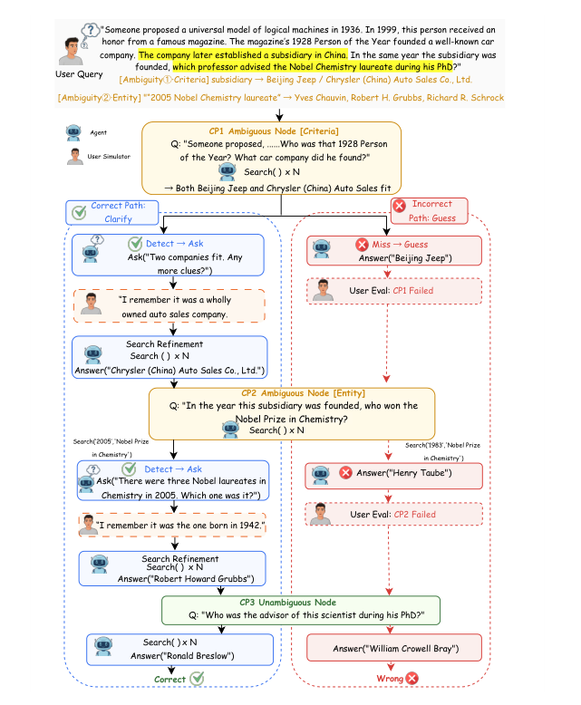
Figure 1: A motivating example of ambiguity propagation in interactive deep search.
Table 1
| Difficulty | Ambiguity | Domain | ||||||||
|---|---|---|---|---|---|---|---|---|---|---|
| Level | n | % | Type | n | % | Type | n | % Type | n | % |
| Easy | 44 | 20.9 | Entity | 176 | 38.0 | Film/TV | 32 | 15.2 Sports | 18 | 8.5 |
| Medium | 82 | 38.9 | Factual | 125 | 27.0 | Games | 27 | 12.8 Geography | 18 | 8.5 |
| Hard | 85 | 40.3 | Version | 109 | 23.5 | Academic | 22 | 10.4 Music | 16 | 7.6 |
| Criteria | 53 | 11.4 | Art | 19 | 9.0 Medicine | 16 | 7.6 | |||
| Finance | 18 | 8.5 Tech. | 15 | 7.1 | ||||||
| Policy/Law | 10 | 4.7 |
Table 2
| Model Acc.(%) CP(%) Det. Acc.(%) Det. F1(%) CE-A(%) CE-B(%) Ask |
|---|
| Doubao-Seed-2.0-Pro 43.1/50.2 63.6/70.4 68.6/75.4 61.9/73.9 93.8/87.5 89.2/83.3 0.84/1.40 |
| Gemini-3.1-Pro-Preview 40.8/53.1 62.1/73.8 69.8/75.7 64.5/75.6 87.8/88.3 82.2/83.2 0.81/1.40 |
| Claude-Opus-4.7 39.8/38.9 57.0/61.6 60.7/71.3 48.9/68.9 92.0/90.0 88.3/82.6 0.58/1.05 |
| DeepSeek-V4-Pro 35.5/38.9 57.6/62.2 60.8/68.8 48.6/63.7 87.9/92.9 82.3/85.8 0.64/1.10 |
| Kimi-K2.6 29.4/35.1 51.3/61.3 57.0/73.3 42.4/71.0 90.1/90.5 83.8/83.4 0.54/1.14 |
| GLM-5.1 28.4/38.4 50.1/61.6 57.9/72.1 44.2/69.8 91.7/92.3 86.2/85.3 0.49/1.19 |
| GPT-5.4† 27.5/- 54.9/- 58.9/- 45.1/- 87.5/- 76.0/- 0.51/- |
| MiMo-v2.5-Pro 24.2/28.4 46.3/55.8 58.5/65.0 47.2/59.5 91.1/85.9 75.0/76.2 0.60/1.04 |
| Hunyuan-3.0-Preview 16.1/24.2 40.4/47.3 55.9/67.6 40.0/62.1 90.2/92.1 78.3/82.5 0.34/0.70 |
| MiniMax-M2.7 16.1/15.2 39.0/42.4 53.3/59.3 39.6/52.4 78.6/83.5 60.7/66.5 0.61/1.10 |
| Qwen3.6-Max 12.3/14.6 33.1/39.9 51.5/63.4 16.0/51.8 94.7/90.8 89.5/85.1 0.07/0.42 |
| † GPT 5 4 failed on 37 neutral prompt questions due to usage policy filtering; guided results are omitted due to only 62 valid runs so this model is excluded from subsequent analysis |
Table 3
| Model DG(%) SHG(%) STA(%) | setting. |
|---|---|
| w/o Search Unambig. Qs. | |
| Gemini-3.1-Pro 66.7 56.5∗ 96.2 | Model Full(%) |
| Doubao-Seed-2.0-Pro 57.1∗ 55.3 98.6 | Acc.(%) ∆ Acc.(%) ∆ |
| DeepSeek-V4-Pro 63.2 50.8 95.7 | Doubao-Seed-2.0-Pro 43.1 2.4 -40.7 71.4 +28.3 |
| Claude-Opus-4.7 58.3 55.0 97.8 | Gemini-3.1-Pro 40.8 19.9 -20.9 81.0 +40.2 |
| MiMo-v2.5-Pro 53.6∗ 53.3 83.7 | DeepSeek-V4-Pro 35.5 9.8 -25.7 74.4 +38.9 |
| GLM-5.1 53.3 48.9 92.7 | Hunyuan-3.0-Preview 16.1 2.9 -13.2 45.5 +29.4 |
| MiniMax-M2.7 50.0 51.5 91.2 | MiniMax-M2.7 16.1 0.8 -15.3 42.9 +26.8 |
| Kimi-K2.6 54.9 52.5 91.2 | |
| Hunyuan-3.0-Preview 51.4 42.9 93.9 | Seed-2.0-Pro decreases from 43.1% to 2.4%, with a |
| Mean 56.5 51.9 93.4 | drop of 40.7 points; Gemini-3.1-Pro and DeepSeek- |
| DG denotes DirectGuess; SHG denotes SearchHeavyGuess; STA denotes | V4-Pro also drop by 20.9 and 25.7 points, respec- |
Table 4
| Model DG(%) SHG(%) STA(%) | w/o Search Unambig. Qs. |
|---|---|
| Gemini-3.1-Pro 66.7 56.5∗ 96.2 | Model Full(%) |
| Doubao-Seed-2.0-Pro 57.1∗ 55.3 98.6 | Acc.(%) ∆ Acc.(%) ∆ |
| DeepSeek-V4-Pro 63.2 50.8 95.7 | Doubao-Seed-2.0-Pro 43.1 2.4 -40.7 71.4 +28.3 |
| Claude-Opus-4.7 58.3 55.0 97.8 | Gemini-3.1-Pro 40.8 19.9 -20.9 81.0 +40.2 |
| MiMo-v2.5-Pro 53.6∗ 53.3 83.7 | DeepSeek-V4-Pro 35.5 9.8 -25.7 74.4 +38.9 |
| GLM-5.1 53.3 48.9 92.7 | Hunyuan-3.0-Preview 16.1 2.9 -13.2 45.5 +29.4 |
| MiniMax-M2.7 50.0 51.5 91.2 | MiniMax-M2.7 16.1 0.8 -15.3 42.9 +26.8 |
| Kimi-K2.6 54.9 52.5 91.2 | |
| Hunyuan-3.0-Preview 51.4 42.9 93.9 | Seed-2.0-Pro decreases from 43.1% to 2.4%, with a |
| Mean 56.5 51.9 93.4 | drop of 40.7 points; Gemini-3.1-Pro and DeepSeek- |
| DG denotes DirectGuess; SHG denotes SearchHeavyGuess; STA denotes | V4-Pro also drop by 20.9 and 25.7 points, respec- |
Table 5
| – provider’s discrete reasoning-effort or thinking-level | |
|---|---|
| Model DG SHG DA STA | setting; thinking – thinking/reasoning mode enabled (no |
| Gemini-3.1-Pro 24.7 15.8 4.8 54.8 | effort granularity exposed); adapt. – adaptive thinking |
| Doubao-Seed-2.0-Pro 19.2 32.2 0.7 47.9 | budget. |
| DeepSeek-V4-Pro 26.0 41.8 0.7 31.5 | |
| Claude-Opus-4.7 41.1 27.4 0.7 30.8 | Model (paper) Provider API Identifier Reasoning |
| MiMo-v2.5-Pro 19.2 51.4 0.0 29.5 | GPT-5.4 OpenAI gpt-5.4-2026-03-05 xhigh |
| GLM-5.1 41.1 30.8 0.0 28.1 | Gemini-3.1-Pro-Preview Google gemini-3.1-pro-preview high |
| MiniMax-M2.7 52.1 22.6 2.1 23.3 | Claude-Opus-4.7 Anthropic claude-opus-4-7 adapt.; max |
| Kimi-K2.6 34.9 41.8 0.0 23.3 | Doubao-Seed-2.0-Pro-High ByteDance doubao-seed-2-0-pro-260215 high |
| Doubao-Seed-2.0-Pro-Medium ByteDance doubao-seed-2-0-pro-260215 medium | |
| Hunyuan-3.0-Preview 24.0 52.7 0.7 22.6 | DeepSeek-V4-Pro DeepSeek deepseek-v4-pro thinking; max |
| Qwen3.6-Max Alibaba qwen3.6-max-preview thinking | |
| DG denotes DirectGuess; SHG denotes SearchHeavyGuess; DA denotes | Kimi-K2.6 Moonshot AI kimi-k2.6 thinking |
| DirectAsk; STA denotes SearchThenAsk. | MiMo-v2.5-Pro Xiaomi mimo-v2.5-pro thinking |
| Hunyuan-3.0-Preview Tencent hy3-preview high | |
| MiniMax-M2.7 MiniMax MiniMax-M2.7 thinking | |
| GLM-5.1† Zhipu AI z-ai/glm-5.1 thinking | |
| • SearchThenAsk: retrieve before clarification. | User simulator and checkpoint judge |
| Gemini-3-Flash-Medium Google gemini-3-flash-preview medium | |
| The threshold K =3 is determined data-driven | † GLM 5 1 is accessed via the OpenRouter gateway (z ai/glm 5 1) rather |
Table 6
| Model DG SHG DA STA | setting; thinking – thinking/reasoning mode enabled (no |
|---|---|
| Gemini-3.1-Pro 24.7 15.8 4.8 54.8 | effort granularity exposed); adapt. – adaptive thinking |
| Doubao-Seed-2.0-Pro 19.2 32.2 0.7 47.9 | budget. |
| DeepSeek-V4-Pro 26.0 41.8 0.7 31.5 | |
| Claude-Opus-4.7 41.1 27.4 0.7 30.8 | Model (paper) Provider API Identifier Reasoning |
| MiMo-v2.5-Pro 19.2 51.4 0.0 29.5 | GPT-5.4 OpenAI gpt-5.4-2026-03-05 xhigh |
| GLM-5.1 41.1 30.8 0.0 28.1 | Gemini-3.1-Pro-Preview Google gemini-3.1-pro-preview high |
| MiniMax-M2.7 52.1 22.6 2.1 23.3 | Claude-Opus-4.7 Anthropic claude-opus-4-7 adapt.; max |
| Kimi-K2.6 34.9 41.8 0.0 23.3 | Doubao-Seed-2.0-Pro-High ByteDance doubao-seed-2-0-pro-260215 high |
| Doubao-Seed-2.0-Pro-Medium ByteDance doubao-seed-2-0-pro-260215 medium | |
| Hunyuan-3.0-Preview 24.0 52.7 0.7 22.6 | DeepSeek-V4-Pro DeepSeek deepseek-v4-pro thinking; max |
| Qwen3.6-Max Alibaba qwen3.6-max-preview thinking | |
| DG denotes DirectGuess; SHG denotes SearchHeavyGuess; DA denotes | Kimi-K2.6 Moonshot AI kimi-k2.6 thinking |
| DirectAsk; STA denotes SearchThenAsk. | MiMo-v2.5-Pro Xiaomi mimo-v2.5-pro thinking |
| Hunyuan-3.0-Preview Tencent hy3-preview high | |
| MiniMax-M2.7 MiniMax MiniMax-M2.7 thinking | |
| GLM-5.1† Zhipu AI z-ai/glm-5.1 thinking | |
| • SearchThenAsk: retrieve before clarification. | User simulator and checkpoint judge |
| Gemini-3-Flash-Medium Google gemini-3-flash-preview medium | |
| The threshold K =3 is determined data-driven | † GLM 5 1 is accessed via the OpenRouter gateway (z ai/glm 5 1) rather |
Table 7
| Model | Setting Input Output | |
|---|---|---|
| D b S d 2 0 P | Hi h | N t l 1 250 346 11 891 |
Table 8
| Model | w/o | Search | Unambig. | Qs. |
|---|---|---|---|---|
| Input | Output | Input | Output | |
| Doubao-Seed-2.0-Pro-High | 54,867 | 11,619 | 1,640,655 | 13,125 |
| Gemini-3.1-Pro-Preview | 24,030 | 10,810 | 1,575,854 | 9,761 |
| DeepSeek-V4-Pro | 8,109 | 14,281 | 4,328,007 | 8,520 |
| Hunyuan-3.0-Preview | 65,534 | 19,870 | 1,505,374 | 11,648 |
| MiniMax-M2.7 | 3,105 | 2,820 | 1,500,414 | 18,199 |
Table 9
| Domain: Sports | Difficulty: Medium | # CPs: 4 | # Ambi: 2 (Fac | |
|---|---|
| Domain: Video Games | Difficulty: Medium | # CPs: 4 | # Ambi: 2 | tual Inaccuracy, Version) | Gold: Chongqing |
| (Entity) | Gold: 2013/6/26 | PART 1 — INPUT QUESTION PAIR (original seed and its ambiguity- |
| PART 1 — INPUT QUESTION PAIR (original seed and its ambiguity- | injected rewrite) |
| injected rewrite) | Original Q (seed, before ambiguity injection; reference only) |
| en A certain country is known as the “Land of Windmills”. A city | |
| Original Q (seed, before ambiguity injection; reference only) | football team is based in this country’s seat of government. In 2013, |
| en As of February 2026, a representative work of Chongqing Pathea | a Chinese player trial-trained with that team; in a 2018 Chinese |
| Games won the GWB Indie Game Awards Bronze Prize; this work | Super League (CSL) match, this player came on as a substitute for a |
| is the sequel to a certain game whose publisher has another game | male athlete at the 60th minute. Where was that male athlete born? |
| that won the 2012 Top Ten Most Anticipated Web Games; when | zh 某个国家被称为“风车之国”，该国家的政府所在地有一个城 |
| was the first batch of licensed agents of that latter game (in | 市球队。2013年一名中国球员在该队试训，该球员在2018年 |
| June 2012) formally confirmed to be acquired? | 中超比赛中第60分钟替补一名男运动员出场，该男运动员出 |
| zh 截止2026年2月份，重庆帕斯亚科技有限公司的某部代表作品 | 生于哪里？ |
| 获GWB独立游戏大奖赛铜奖，这个代表作品是某游戏的续 | |
| 作，这个游戏的出版单位有一款游戏荣获2012年度最受玩家 | Rewritten Q (after ambiguity injection; shown to agent) |
| 期待的十大网页游戏，这款游戏2012年6月的首批代理什么时 | en A certain country is known as the “Land of Hajimi”. A city football |
| 间正式确定被收购？ | team is based in this country’s seat of government. In 2013, a |
| Chinese player trial-trained with that team; in a CSL match in | |
| Rewritten Q (after ambiguity injection; shown to agent) | March–April, this player came on as a substitute for a male athlete. |
| en As of February 2026, a representative work of Chongqing Pathea | Where was that male athlete born? |
| Games won an award; this work is the sequel to a certain game | zh 某个国家被称为“哈吉米之国”，该国家的政府所在地有一个 |
| whose publisher has another game that won an award; when was | 城市球队。2013年有中国球员在该队试训，该球员在3月 |
| the first batch of licensed agents of that latter game (in June 2012) | ～4月中超的某个比赛中替补一名男运动员出场，该男运动员 |
| formally confirmed to be acquired? | 出生于哪里？ |
| zh 截止2026年2月份，重庆帕斯亚科技有限公司的某部代表作 | |
| 品获奖，这个代表作品是某游戏的续作，这个游戏的出版单 | PART 2 — CHECKPOINT TRAJECTORY (four sub-questions, evaluated in |
| 位有一款游戏获奖，这款游戏2012年6月的首批代理什么时间 | order) |
| 正式确定被收购？ | CP1 — Ambi (Factual Inaccuracy) |
| PART 2 — CHECKPOINT TRAJECTORY (four sub-questions, evaluated in | Sub-Q Which country is known as the “Land of Hajimi”? |
| order) | 哪个国家被称为“哈吉米之国”？ |
| Target the Netherlands | |
| CP1 — Ambi (Entity) | 荷兰 |
| Sub-Q Which representative work of Pathea Games won an award? | Logic “Land of Hajimi” is not an actual nickname for any country; it is a |
| 重庆帕斯亚科技有限公司有哪部代表作品获奖？ | fabricated reference deliberately injected as a factual inaccuracy. |
| Target My Time at Sandrock | Searches return no plausible match, so the agent must invoke ASK |
| 《沙石镇时光》 | for clarification rather than commit to a guess. |
| Logic Two Pathea Games works satisfy “won an award”: My Time at | “哈吉米之国”并非任何国家的真实别称，是出题阶段刻意杜 |
| Portia, My Time at Sandrock. | 撰的事实错误。retrieval 不会返回匹配结果，agent 应识别此 |
| 帕斯亚科技有两部代表获奖作品——《波西亚时光》、《沙 | 事实错误并向用户求助，而非凭借猜测作答。 |
| 石镇时光》——均满足“获奖”约束。 | Clue “I misremembered – it’s the Land of Windmills.” |
| Clue “I remember it won the GWB Indie Game Awards Bronze Prize.” | “我记错了，是风车之国” |
| “我记得是获GWB独立游戏大奖赛铜奖” | CP2 — Unambi |
| CP2 — Unambi | Sub-Q A city football team is based in this country’s seat of government; |
| Sub-Q This work is the sequel to which game, and who is its publisher? | in 2013, a Chinese player trial-trained with that team. Who is the |
| 这个代表作品是某游戏的续作，这个游戏的出版单位是？ | player? |
| Target Shenzhen ZQ Game Co., Ltd. | 该国家的政府所在地有一个城市球队，2013年有位中国球员 |
| 深圳中青宝互动网络股份有限公司 | 在该队试训，该球员是？ |
| Target Wang Chu | |
| CP3 — Ambi (Entity) | 王楚 |
| Sub-Q Among ZQ Game’s products, which game has won an award? | |
| 深圳中青宝互动网络股份有限公司的产品中哪个游戏曾获 | CP3 — Ambi (Version) |
| 奖？ | Sub-Q In a CSL match in March–April 2018, this player came on as a |
| Target Jingtian Zhanshen Online | substitute for a male athlete. Who is that athlete? |
| 《惊天战神OL》 | 该球员2018年3月～4月中超的某个比赛中替补一名男运动员 |
| Logic Three ZQ Game titles satisfy “won an award”: War of Resistance, | 出场，这个男运动员是？ |
| Drawn Sword, Jingtian Zhanshen Online. | Target Cao Yongjing |
| 中青宝有三款代表获奖游戏——《抗战》、《亮剑》、《惊 | 曹永竞 |
| 天战神OL》—— 均满足“获奖”约束。 | Logic Within March–April 2018, Wang Chu came on as a substitute in |
| Clue “I remember it won the 2012 Top Ten Most Anticipated Web | two distinct CSL matches on different dates, replacing Wang Gang |
| Games award.” | and Cao Yongjing respectively; the rewritten window matches both, |
| “我记得是荣获2012年度最受玩家期待的十大网页游戏奖” | and only the exact date pins down which. |
| 王楚在2018年3月～4月期间替补出场两次，在两个不同日期 | |
| CP4 — Unambi (final) | 的中超比赛中分别替换了王刚和曹永竞；重写后的时间窗口 |
| Sub-Q When was the first batch of licensed agents of this game (in | 同时匹配这两场，唯有具体日期才能锁定其中一场。 |
| June 2012) formally confirmed to be acquired? | Clue “It was on April 8, 2018.” |
| 这款游戏2012年6月的首批代理什么时间正式确定被收购？ | “是在2018年4月8日上场的” |
| Target: 2013/6/26 | CP4 — Unambi (final) |
| Sub-Q Where was this athlete born? | |
| 这个运动员出生于哪里？ | |
| Target: Chongqing / 重庆市 |
Table 11
| Domain: Technology | Difficulty: Easy | # CPs: 3 | # Ambi: 1 (Criteria) |
|---|
| | Gold: 12 |
| PART 1 — INPUT QUESTION PAIR (original seed and its ambiguity- |
| injected rewrite) |
| Original Q (seed, before ambiguity injection; reference only) |
| en The R&D of a certain manned submersible was designated as a key |
| special project under the National 863 Program in 2002. The |
| submersible made its first dives in the world’s third-largest ocean in |
| a certain year; in April of that same year, a research vessel |
| completed its maiden voyage from a certain dock. That dock is a |
| sub-project of a certain plaza, which opens to visitors free of charge |
| during a certain folk festival. The festival is associated with a “top |
| three [cities]” ranking; among the three cities, one has a Chinese |
| name consisting of three characters and lies above 40◦N and is also |
| nicknamed the “Ice City”. A satellite launched from this city on |
| 9 June 2023 was developed by a certain university. As of |
| April 2025, how many sci-tech innovation teams does that |
| university have? |
| zh 某载人潜水器的研制工作在2002年被列为863计划重大专项， |
| 该载人潜水器在某年首次奔赴世界第三大洋开展下潜作业， |
| 同年4月，某考察船在某码头完成首次启航，该码头是某广场 |
| 的子项目，该广场在某一节日期间免费向游人开放，该民间 |
| 节日有一个榜单，榜单的三大城市中有一个三字城市位于北 |
| 纬40多度且别称是“冰城”，该城市2023年6月9日发射的卫星 |
| 由一所学校研制，该学校截止2025年4月，科技创新团队有多 |
| 少个？ |
| Rewritten Q (after ambiguity injection; shown to agent) |
Table 12
| (If it is null or empty, this | step has no | ||||
|---|---|---|---|---|---|
| Category | N | % | ambiguity; otherwise, this step | has | |
| Overall QC outcome | ambiguity.) | ||||
| Passed | 236 | 75.2 | - Whether the ambiguity in this | step has | been |
| Removed | 78 | 24.8 | clarified, ambiguity_clarified: | ||
| {current_ambiguity_clarified} | (values: yes | / | |||
| Removal reasons (N = 78) | no) | ||||
| Commonsense factual error | 49 | 62 8 |
When Search Agents Should Ask: DISCOBENCH for Clarification-Aware
搜索智能体何时该提问：面向澄清感知的
Deep Search
深度搜索
Yiling Tao1,2,*,§, Shihan Deng1,*, Meiling Tao,
Yiling Tao1,2,*,§, Shihan Deng1,*, Meiling Tao,
Pengzhi Wei1, Zhichao Hu1,†, Zhihao Zhu1,†
Pengzhi Wei1, Zhichao Hu1,†, Zhihao Zhu1,†
1Hunyuan, Tencent 2Shenzhen International Graduate School, Tsinghua University
1腾讯混元 2清华大学深圳国际研究生院
Abstract摘要
Search agents powered by large language mod- els (LLMs) are increasingly used to solve com- plex information-seeking tasks, requiring multi- step retrieval and reasoning to fulfill user goals. However, existing benchmarks often assume that user queries are complete and explicit, overlooking the fact that real-world search re- quests are frequently vague, underspecified, or even factually incorrect. In deep search scenar- ios, such ambiguity can propagate along multi- step reasoning chains and lead agents toward incorrect search trajectories. To address this gap, we introduce DISCOBENCH, a benchmark for clarification-aware deep search, designed to evaluate whether search agents can proac- tively identify ambiguity, ask effective clarifi- cation questions, and recover correct reasoning paths through user interaction. DISCOBENCH contains 211 samples and 463 ambiguity in- stances across 11 real-world domains, cover- ing four ambiguity types. We further design a user simulator for multi-turn interaction and evaluate model performance from four perspec- tives: task utility, ambiguity detection, interac- tion strategy, and cost efficiency. Experiments on representative LLMs show that ambiguity detection and effective clarification are distinct capabilities, and that repeatedly searching in- stead of asking for clarification often performs worse than direct guessing, highlighting a criti- cal gap between retrieval ability and interactive problem-solving in current search agents.
由大语言模型（LLM）驱动的搜索智能体，正被越来越多地用于求解复杂的信息寻求任务——这类任务需要多步检索与推理才能达成用户目标。然而，现有基准通常假设用户查询完整且明确，忽视了真实搜索请求往往模糊、欠约束甚至事实有误这一事实。在深度搜索场景中，此类歧义会沿多步推理链传播，将智能体引向错误的搜索轨迹。为弥合这一缺口，我们提出 DISCOBENCH——一个面向澄清感知深度搜索的基准，用于评估搜索智能体能否主动识别歧义、提出有效的澄清问题，并通过与用户交互恢复正确的推理路径。DISCOBENCH 覆盖 11 个真实领域，含 211 个样本与 463 个歧义实例，涉及四种歧义类型。我们还设计了支持多轮交互的用户模拟器，并从任务效用、歧义检测、交互策略与成本效率四个维度评估模型性能。在代表性 LLM 上的实验表明：歧义检测与有效澄清是两种彼此独立的能力；以反复搜索代替请求澄清，效果往往不及直接猜测。这凸显了当前搜索智能体在检索能力与交互式问题求解之间的关键落差。
arXiv:2606.27669v2 [cs.CL] 1 Jul 2026
arXiv:2606.27669v2 [cs.CL] 1 Jul 2026
traditional static corpus retrieval to autonomous Web Search Agents capable of handling complex
从传统静态语料检索到能够处理复杂
goals (Xi et al., 2025; OpenAI, 2025; Google, 2025). These agents can simulate human navi- gation and browsing behaviors, achieving multi- step reasoning and information integration in dy- namic and complex internet environments (Wu et al., 2025; Zhou et al., 2024).
目标（Xi et al., 2025; OpenAI, 2025; Google, 2025）。这类智能体能模拟人类的导航与浏览行为，在动态复杂的互联网环境中完成多步推理与信息整合（Wu et al., 2025; Zhou et al., 2024）。
1Introduction1 引言
However, current paradigms often presuppose that the user’s initial query is complete and ex- plicit. This assumption deviates significantly from real-world information-seeking behavior, where users often provide vague or fragmented queries due to blurred memories or cognitive load limi- tations (Aliannejadi et al., 2019; Zamani et al., 2020). In deep search scenarios, the impact of this discrepancy is further amplified. Unlike tra- ditional single-hop retrieval (Kwiatkowski et al.,
然而，当前范式往往预先假设用户的初始查询完整且明确。这一假设与真实信息寻求行为明显不符——受记忆模糊或认知负荷所限，用户常给出模糊或碎片化的查询（Aliannejadi et al., 2019; Zamani et al., 2020）。在深度搜索场景中，这种错位的影响被进一步放大。与传统的单跳检索（Kwiatkowski et al.,
In recent years, search agents based on Large Language Models (LLMs) have made significant progress in the field of information retrieval (Mi- alon et al., 2023; Wei et al., 2025; Wong et al., 2025). The search paradigm is shifting from
近年来，基于大语言模型（LLM）的搜索智能体在信息检索领域进展显著（Mialon et al., 2023; Wei et al., 2025; Wong et al., 2025）。搜索范式正从
*Equal contribution. †Corresponding authors. Correspondence to elliotzhu@tencent.com
*同等贡献。†通讯作者。联系邮箱：elliotzhu@tencent.com
§Work done during an internship at Tencent Hunyuan.
§本工作完成于作者在腾讯混元实习期间。
1
1
2019), deep search involves complex multi-step reasoning chains (Trivedi et al., 2022), meaning any subtle ambiguity in the initial query can lead to cascading errors in subsequent navigation and information integration, wasting expensive compu- tational resources on the wrong path. As illustrated in Fig. 1, failing to proactively clarify ambiguous checkpoints further propagates errors throughout the remaining search process. Consequently, in- troducing interactive clarification mechanisms to resolve ambiguity has become particularly impor- tant. Meanwhile, search tasks naturally provide strong factual grounding, allowing both interaction quality and retrieval correctness to be objectively verified through external evidence. This property offers a reliable signal for evaluating an agent’s ability to identify and resolve ambiguity in com- plex interactive settings.
2019）不同，深度搜索涉及复杂的多步推理链（Trivedi et al., 2022）：初始查询中任何细微的歧义，都可能在后续导航与信息整合中引发级联错误，使昂贵的计算资源浪费在错误路径上。如图 1 所示，若未能在歧义检查点主动澄清，错误将沿剩余搜索过程继续传播。因此，引入交互式澄清机制以消解歧义尤为重要。与此同时，搜索任务天然具备强事实锚定，交互质量与检索正确性均可借助外部证据客观验证——这一特性为衡量智能体在复杂交互环境中识别并消解歧义的能力提供了可靠信号。
proactively identify underspecified information and interact with the user to obtain discriminative clues, rather than relying on direct guessing or closed-form option selection strategies.
主动识别信息欠明确之处并与用户交互以获取判别性线索，而非依赖直接猜测或封闭式选项选择策略。
We conduct experiments on DISCOBENCH across a set of representative LLMs. The results show that current search agents still struggle to de- termine when clarification is needed: even stronger models often fail to recognize ambiguity during the search process or ask effective clarification ques- tions. This suggests that deep interactive search requires not only stronger retrieval and reasoning abilities, but also better ambiguity awareness and proactive clarification strategies. Our main contri- butions are as follows:
我们在 DISCOBENCH 上评测了一组代表性 LLM。结果显示，现有搜索智能体仍难以判断何时需要澄清：即便是更强的模型，也常在搜索过程中识别不出歧义、提不出有效的澄清问题。这表明深度交互搜索不仅依赖更强的检索与推理能力，也依赖更好的歧义意识与主动澄清策略。本文主要贡献如下：
• We construct DISCOBENCH, a benchmark that models ambiguity as a dynamic phe- nomenon propagating along multi-step rea- soning chains rather than a static property of individual queries, covering 211 samples with 463 ambiguity instances across 11 real-world domains and four ambiguity types.
• 我们构建了 DISCOBENCH。该基准将歧义建模为沿多步推理链传播的动态现象，而非单个查询的静态属性，覆盖 11 个真实领域、四种歧义类型，含 211 个样本与 463 个歧义实例。
While the academic community has recognized the importance of query ambiguity and interac- tion, existing benchmarks still struggle to evaluate the disambiguation capabilities of search agents. Mainstream retrieval benchmarks (e.g., GAIA (Mi- alon et al., 2023), BrowseComp (Wei et al., 2025), AgentBench (Liu et al., 2024)) mostly assume ex- plicit queries and focus on multi-hop reasoning while neglecting proactive interaction. Ambiguity- focused datasets (e.g., AmbigQA (Min et al., 2020), DEEPAMBIGQA (Ji et al., 2025)) primarily con- sist of static scenarios and lack dynamic interaction simulation, whereas interaction-based benchmarks (e.g., IN3 (Qian et al., 2024), UserBench (Qian et al., 2025)) are often confined to closed sandbox environments, falling short in the depth and breadth of Web-scale open-domain knowledge. The recent INTERACTCOMP (Deng et al., 2025) has begun to address search interaction, yet it remains lim- ited in terms of task authenticity, the amplification effects of ambiguity within long-chain reasoning, and the naturalness of interaction modalities.
学术界虽已认识到查询歧义与交互的重要性，现有基准却仍难以评估搜索智能体的消歧能力。主流检索基准（如 GAIA (Mialon et al., 2023)、BrowseComp (Wei et al., 2025)、AgentBench (Liu et al., 2024)）大多假设查询明确，聚焦多跳推理而忽略主动交互；聚焦歧义的数据集（如 AmbigQA (Min et al., 2020)、DEEPAMBIGQA (Ji et al., 2025)）以静态场景为主，缺乏动态交互模拟；基于交互的基准（如 IN3 (Qian et al., 2024)、UserBench (Qian et al., 2025)）则常受限于封闭沙箱环境，在 Web 规模开放领域知识的深度与广度上均有不足。近期的 INTERACTCOMP (Deng et al., 2025) 已开始触及搜索交互，但在任务真实性、歧义在长链推理中的放大效应以及交互模态的自然性方面仍有局限。
• We propose an ambiguity-aware evaluation framework for multi-turn interactive deep search, together with a user simulator that progressively reveals discriminative clues, en- abling unified evaluation of ambiguity detec- tion, clarification effectiveness, and interac- tion cost.
• 我们提出面向多轮交互式深度搜索的歧义感知评估框架，并配套一个渐进揭示判别性线索的用户模拟器，从而对歧义检测、澄清有效性与交互成本进行统一评估。
• Through extensive experiments, we reveal that ambiguity detection and effective clarification are distinct capabilities. We further identify a dominant failure mode in which models re- peatedly continue searching instead of asking for clarification, leading to lower success rates than direct guessing. This finding highlights the need for mechanisms that explicitly bridge retrieval uncertainty and user interaction.
• 大量实验表明，歧义检测与有效澄清是两种彼此独立的能力。我们还发现一种主导性失败模式：模型反复搜索而不请求澄清，成功率反而低于直接猜测。这一发现凸显了显式打通检索不确定性与用户交互的机制的必要性。
To bridge these gaps, we introduce DIS-
为弥合上述缺口，我们提出 DIS-
2Related Work2 相关工作
COBENCH (Deep Interactive Search with ClarificatiOn Benchmark)1, a benchmark for evaluating whether search agents can proactively clarify and resolve ambiguity during multi-step search. Unlike prior benchmarks that mainly focus on static query understanding, DISCOBENCH models ambiguity as a dynamic phenomenon arising during multi-step search trajectories. At each ambiguous checkpoint, agents must
COBENCH（Deep Interactive Search with ClarificatiOn Benchmark）1：一个评估搜索智能体能否在多步搜索中主动澄清并消解歧义的基准。与以往主要关注静态查询理解的基准不同，DISCOBENCH 将歧义建模为多步搜索轨迹中产生的动态现象。在每个歧义检查点，智能体必须
2.1Web Search Benchmark2.1 网页搜索基准
Efforts to benchmark search agents often bifur- cate into two dimensions. One branch focuses on reasoning depth, challenging agents to navigate complex web hierarchies for multi-hop tasks, such as GAIA (Mialon et al., 2023) and the BrowseC- omp series (Wei et al., 2025; Zhou et al., 2025a; Chen et al., 2025). In parallel, other bench- marks explore information width, necessitating
搜索智能体的基准化工作大致沿两个维度展开。一支聚焦推理深度，要求智能体在复杂网页层级中导航以完成多跳任务，如 GAIA (Mialon et al., 2023) 与 BrowseComp 系列 (Wei et al., 2025; Zhou et al., 2025a; Chen et al., 2025)；另一批基准则探索信息宽度，需要
1Our code and data will be publicly released soon.
1我们的代码与数据即将公开发布。
2
2
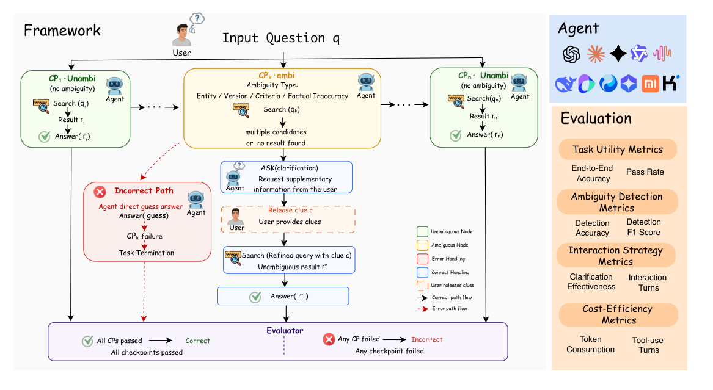
Figure 2: Overview of the proposed interactive retrieval framework and evaluation protocol.
the synthesis of vast horizontal data, as seen in PaSa (He et al., 2025), SPAR (Shi et al., 2025), and WideSearch (Wong et al., 2025). Comple- mentary agent benchmarks like WebArena (Zhou et al., 2024), VisualWebArena (Koh et al., 2024), Mind2Web (Deng et al., 2023), and WebShop (Yao et al., 2022) further evaluate web navigation ca- pabilities in realistic environments. Recent work, such as DeepWideSearch (Lan et al., 2025), has further begun to encompass both dimensions. Con- strained by the assumption of complete queries, these benchmarks leave query ambiguity unex- plored, which remains an essential aspect of au- tonomous search.
海量横向数据的综合，如 PaSa (He et al., 2025)、SPAR (Shi et al., 2025) 与 WideSearch (Wong et al., 2025)。WebArena (Zhou et al., 2024)、VisualWebArena (Koh et al., 2024)、Mind2Web (Deng et al., 2023)、WebShop (Yao et al., 2022) 等互补性智能体基准则进一步考察真实环境下的网页导航能力。DeepWideSearch (Lan et al., 2025) 等近期工作已开始同时覆盖两个维度。受『查询完整』假设所限，这些基准均未触及查询歧义，而它恰是自主搜索不可或缺的一环。
the dynamic, interactive process required for agent- user collaboration to resolve uncertainty.
智能体与用户协作消解不确定性所需的动态交互过程。
2.3Interactive Clarification Benchmark2.3 交互式澄清基准
Interactive benchmarks evaluate agent performance in multi-turn collaborative environments. For in- stance, ColBench (Zhou et al., 2025b) and User- Bench (Qian et al., 2025) target code generation and travel planning, respectively, while IN3 (Qian et al., 2024) and GAIA2 (Froger et al., 2026) inves- tigate implicit intent understanding and conflicting requests in local environments. In conversational QA, Abg-CoQA (Guo et al., 2021) requires agents to clarify coreference or semantic vagueness. Al- though IDRbench (Feng et al., 2026) recently intro- duced interactive clarification into deep research, it is not designed for open-domain web search sce- narios. Most closely related, InteractComp (Deng et al., 2025) pioneers the evaluation of interactive disambiguation for search agents. However, it still contains scenarios that rely more on internal knowl- edge than external retrieval and mainly focuses on initial entity ambiguity rather than cascading errors in deep reasoning. Moreover, its binary feedback setting cannot fully capture the descriptive nature of real user interactions.
交互式基准考察智能体在多轮协作环境中的表现：ColBench (Zhou et al., 2025b) 与 UserBench (Qian et al., 2025) 分别面向代码生成与旅行规划；IN3 (Qian et al., 2024) 与 GAIA2 (Froger et al., 2026) 在本地环境中研究隐式意图理解与冲突请求；对话式问答方面，Abg-CoQA (Guo et al., 2021) 要求智能体澄清指代或语义含糊。IDRbench (Feng et al., 2026) 虽近期将交互式澄清引入深度研究，却并非面向开放域网页搜索场景设计。与本工作关系最近的是 InteractComp (Deng et al., 2025)，它率先评估搜索智能体的交互式消歧；但其部分场景更依赖内部知识而非外部检索，且主要针对初始实体歧义而非深度推理中的级联错误；此外，其二元反馈设定也无法完整刻画真实用户交互的描述性特征。
2.2Ambiguity Benchmark2.2 歧义基准
Research on query ambiguity has evolved into sev- eral taxonomies. Semantic and structural ambigu- ity benchmarks represented by AmbiEnt (Liu et al., 2023) investigate logical divergences arising from linguistic properties. In the realm of multi-answer factual ambiguity, datasets such as AmbigQA (Min et al., 2020) and ASQA (Stelmakh et al., 2022) fo- cus on mapping single queries to multiple concur- rent valid facts. Furthermore, conditional and con- textual ambiguity benchmarks including TempAm- bigQA (Piryani et al., 2024), CondAmbigQA (Li et al., 2025) and SituatedQA (Zhang and Choi, 2021) address scenarios where answers depend on latent temporal or geographical backgrounds that remain unstated in the initial query. While valu- able, these benchmarks rely on a static evaluation paradigm that prioritizes answer identification over
查询歧义研究已发展出数种分类体系。以 AmbiEnt (Liu et al., 2023) 为代表的语义与结构歧义基准，考察由语言性质引发的逻辑分歧；在多答案事实歧义方向，AmbigQA (Min et al., 2020)、ASQA (Stelmakh et al., 2022) 等数据集着力于将单一查询映射至多个同时成立的事实；而以 TempAmbigQA (Piryani et al., 2024)、CondAmbigQA (Li et al., 2025)、SituatedQA (Zhang and Choi, 2021) 为代表的条件与情境歧义基准，则处理答案取决于初始查询未言明的潜在时间或地理背景的情形。这些基准虽有价值，但均依托静态评估范式，优先答案识别而非
3Task Formulation3 任务形式化
We formulate multi-turn interactive retrieval as a se-
我们将多轮交互式检索形式化为一个顺序
quential question-answering task in which an agent resolves a complex question q through a series of structured checkpoints( CP), with the ability to interact with a user when ambiguity is encountered.
问答任务：智能体通过一系列结构化检查点（CP）求解复杂问题 q，并在遇到歧义时可与用户交互。
3
3
4.1Seed Data Preparation4.1 种子数据准备
As illustrated in Fig. 2, the agent must determine whether the current retrieval state is ambiguous and decide whether to continue retrieval or request clarification from the user.
如图 2 所示，智能体须判断当前检索状态是否存在歧义，并决定继续检索还是向用户请求澄清。
The goal of Phase 1 is to construct high-quality multi-hop seed questions that serve as the founda- tion for subsequent ambiguity injection.
阶段 1 旨在构建高质量的多跳种子问题，为后续歧义注入奠定基础。
Question and Checkpoints. Each question q is decomposed into an ordered sequence of n check- points {CP1, CP2, . . . , CPn}, each representing an intermediate retrieval sub-goal. A checkpoint CPi is assigned one of two types:
问题与检查点。每个问题 q 被分解为 n 个检查点的有序序列 {CP1, CP2, . . . , CPn}，每个检查点对应一个中间检索子目标。检查点 CPi 被赋予以下两种类型之一：
Topic & Seed Collection. We first manually col- lect seed topics from 11 diverse knowledge do- mains to ensure broad domain coverage and knowl- edge diversity. In terms of knowledge sources, we utilize encyclopedic resources (e.g., Wikipedia and Baidu Baike) together with search engine result pages from search engines (e.g., Google, Bing, and Baidu). DISCOBENCH is primarily constructed in Chinese to better reflect realistic ambiguity patterns and retrieval behaviors in Chinese web environ- ments. To ensure realistic retrieval requirements, all questions are required to satisfy the following conditions: (1) the answer must be objectively ver- ifiable; (2) the question cannot be solved purely through common sense reasoning; and (3) external retrieval is necessary for task completion.
主题与种子收集。我们首先从 11 个差异化知识领域人工收集种子主题，以保证领域覆盖面与知识多样性。知识来源上，我们结合百科资源（如 Wikipedia、百度百科）与搜索引擎（如 Google、Bing、百度）的结果页面。DISCOBENCH 以中文为主构建，以便更真实地反映中文网页环境下的歧义模式与检索行为。为保证检索需求的真实性，所有问题须满足：(1) 答案可客观验证；(2) 无法仅凭常识推理解决；(3) 必须借助外部检索方能完成。
• Unambi: an unambiguous checkpoint where the agent can answer directly via retrieval.
• Unambi：无歧义检查点，智能体经由检索即可直接作答。
• Ambi: an ambiguous checkpoint containing one of four injected ambiguity types, which causes retrieval to return multiple candidates or no valid result.
• Ambi：歧义检查点，含四种注入歧义类型之一，会使检索返回多个候选结果或无有效结果。
Agent Actions and User Interaction. At each checkpoint CPi, the agent may execute one of three actions:
智能体动作与用户交互。在每个检查点 CPi，智能体可执行以下三种动作之一：
Multi-hop QA Construction. Inspired by exist- ing multi-hop QA datasets (Ho et al., 2020; Trivedi et al., 2022), we adopt a collaborative framework that combines LLM-based preliminary expansion with human verification and reconstruction. Specif- ically, the LLM first generates preliminary single- hop factual QA pairs based on manually collected seed topics, and further performs graph-structured expansion with external retrieval results to con- struct candidate multi-hop reasoning chains. After automatic generation, human annotators further re- view and reconstruct the reasoning chains. Finally, each Seed QA sample is organized into a structured multi-hop instance, serving as the foundation for subsequent ambiguity construction.
多跳问答构建。受现有多跳问答数据集（Ho et al., 2020; Trivedi et al., 2022）启发，我们采用『LLM 预扩展 + 人工校验重构』的协作框架：LLM 先基于人工收集的种子主题生成初步的单跳事实问答对，再结合外部检索结果做图结构扩展，得到候选多跳推理链；自动生成之后，由人工标注者审查并重构推理链。最终，每个种子问答样本被组织为结构化的多跳实例，作为后续歧义构建的基础。
ai ∈{SEARCH, ASK, ANSWER} (1)
ai ∈{SEARCH, ASK, ANSWER} (1)
For unambiguous checkpoints, the agent directly is- sues SEARCH(qi) and proceeds with ANSWER(ri). For an ambiguous checkpoint CPk, the agent should invoke ASK(·) to request supplementary information, upon which the user releases a pre-defined clue c. The agent then refines its search and resolves the ambiguity before issuing ANSWER(r∗).
对于无歧义检查点，智能体直接执行 SEARCH(qi)，随后进行 ANSWER(ri)。遇到歧义检查点 CPk 时，智能体应调用 ASK(·) 请求补充信息，用户随之释放预定义线索 c；智能体再据此细化搜索、消解歧义，最后执行 ANSWER(r∗)。
Evaluation. We evaluate the agent from four as- pects: task utility, ambiguity detection, interaction strategy, and cost efficiency.
评估。我们从任务效用、歧义检测、交互策略与成本效率四个维度评估智能体。
4.2Ambiguous Data Construction4.2 歧义数据构建
4Methodology of Dataset Construction4 数据集构建方法
Phase 2 aims to inject ambiguity into existing multi- hop reasoning chains, transforming deterministic QA tasks into interactive reasoning tasks that re- quire clarification.
阶段 2 旨在向既有多跳推理链注入歧义，把确定性的问答任务转化为需要澄清的交互式推理任务。
We construct DISCOBENCH, an interactive ambigu-
我们构建了 DISCOBENCH——一个交互式歧
ous question answering (QA) benchmark designed to evaluate whether LLMs can identify ambigu- ity, proactively request clarification, and recover correct reasoning trajectories in multi-turn open- domain search tasks. As illustrated in Fig. 3, the construction pipeline consists of two phases: (1) Seed Data Preparation, which builds high-quality multi-hop reasoning chains, and (2) Ambiguous Data Construction, which injects ambiguity and generates discriminative facts for interactive dis- ambiguation. The entire pipeline adopts a semi- automatic collaborative framework.
义问答（QA）基准，用于评估 LLM 能否在多轮开放域搜索任务中识别歧义、主动请求澄清并恢复正确的推理轨迹。如图 3 所示，构建流程分两个阶段：(1) 种子数据准备，构建高质量多跳推理链；(2) 歧义数据构建，注入歧义并为交互式消歧生成判别性事实。整个流程采用半自动协作框架。
Ambiguity Point Identification. Given a deter- ministic multi-hop reasoning chain, we identify hops where ambiguity can be naturally introduced. Instead of injecting ambiguity randomly, we fo- cus on nodes whose target entity has similar alter- natives, such that relaxing the distinguishing con- straint leads to multiple plausible candidates. A node is retained as a candidate ambiguity point if: (1) its target entity shares attributes with sibling
歧义点识别。给定确定性多跳推理链，我们识别可自然引入歧义的跳。我们不随机注入歧义，而是聚焦目标实体存在相似替代项的节点——放松区分性约束后即会出现多个合理候选。节点满足以下条件方可保留为候选歧义点：(1) 其目标实体与兄弟
4
4
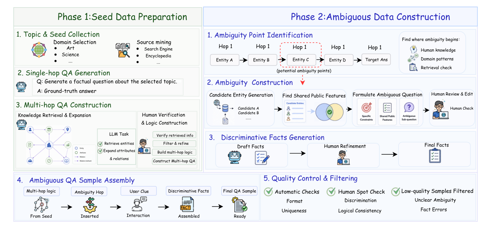
Figure 3: Overview of the two-phase dataset construction pipeline, including seed multi-hop QA construction, ambiguity injection, discriminative fact generation, and quality control.
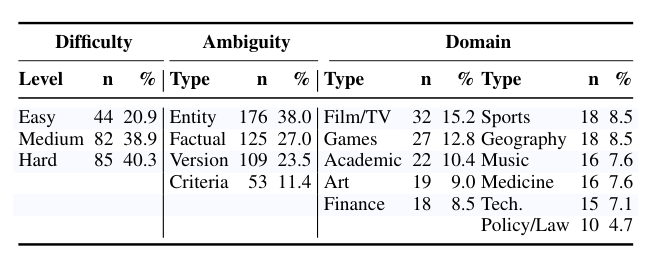
Table 1: Data statistics of DISCOBENCH (211 samples, 463 ambiguity instances).
entities; (2) the downstream reasoning chain re- mains executable under underspecification; and (3) the ambiguity can be resolved with a single user- provided clue. All candidate positions are further verified manually.
实体共享属性；(2) 下游推理链在欠明确条件下仍可执行；(3) 歧义可凭单条用户线索消解。所有候选位置均经人工复核。
Ambiguity Construction. After identifying am- biguity points, we inject ambiguity into the origi- nal reasoning chain by replacing strong constraints with shared attributes among multiple candidate en- tities. Specifically, the system retrieves candidate entities satisfying the current reasoning constraints and uses LLMs to identify shared characteristics, such as common authors, temporal ranges, or orga- nizational relations. The original question is then rewritten using these shared features, allowing mul- tiple candidates to satisfy the same description. Hu- man annotators further verify the naturalness, solv- ability, and logical consistency of the constructed ambiguous questions.
歧义构建。识别歧义点后，我们将『强约束』替换为多个候选实体间的共享属性，从而向原始推理链注入歧义。具体做法是：系统先检索满足当前推理约束的候选实体，再由 LLM 识别其共享特征（如共同作者、时间范围或组织关系），继而用这些共享特征改写原问题，使多个候选均能满足同一描述。人工标注者最后复核歧义问题的自然性、可解性与逻辑一致性。
4.3Data Statistics and Quality Control4.3 数据统计与质量控制
Tab. 1 presents the overall statistics of DIS-
表 1 给出了 DIS-
COBENCH, including domain distribution, task dif- ficulty, and ambiguity types. Task difficulty is determined by the number of ambiguity check- points, where easy, medium, and hard correspond to 1, 2, and 3 ambiguity points, respectively. DIS-
COBENCH 的总体统计，涵盖领域分布、任务难度与歧义类型。任务难度由歧义检查点数量决定：easy、medium、hard 分别对应 1、2、3 个歧义点。DIS-
COBENCH covers four ambiguity types: Entity (multiple entities satisfy the same description), Ver- sion (different temporal or version-specific states), Criteria (different evaluation standards or ranking criteria), and Factual Inaccuracy (descriptions in- consistent with objective facts).
COBENCH 覆盖四种歧义类型：Entity（多个实体满足同一描述）、Version（不同的时间或版本状态）、Criteria（不同的评价或排名标准）与 Factual Inaccuracy（与客观事实不符的描述）。
Discriminative Facts Generation. To support in- teractive disambiguation, we construct discrimina- tive facts for each ambiguity point, which simulate supplementary clues provided by users and distin- guish the target entity from distractors. Candidate facts are generated by retrieval-augmented LLMs from perspectives such as entity attributes, tempo- ral information, relations, numerical facts, version differences, and organizational associations, and are then manually verified for factual correctness, distinguishability, and naturalness.
判别性事实生成。为支持交互式消歧，我们为每个歧义点构建判别性事实——它们模拟用户提供的补充线索，用以将目标实体与干扰项区分开来。候选事实由检索增强的 LLM 从实体属性、时间信息、关系、数值事实、版本差异、组织关联等视角生成，再经人工核验其事实正确性、区分度与自然度。
DISCOBENCH construction process involved an expert annotation instructor, six undergraduate an- notators, and two quality inspectors. Annotators are recruited from diverse academic backgrounds in multiple disciplines to ensure annotation diversity and broad domain coverage. During the construc- tion process, all samples were further reviewed for factual correctness, retrieval feasibility, logical consistency, and ambiguity solvability.
DISCOBENCH 的构建由一名专家标注指导、六名本科生标注者与两名质检员协作完成。标注者来自多个学科、学术背景各异，以保证标注多样性与领域覆盖面。构建过程中，所有样本均需再经事实正确性、检索可行性、逻辑一致性与歧义可解性审查。
5
5
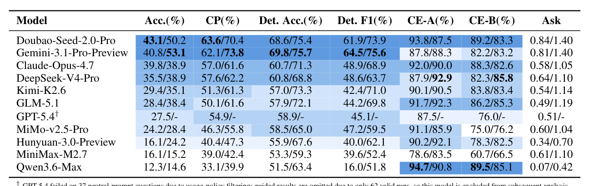
Table 2: Main results on DISCOBENCH under Neutral/Guided prompting. Acc.: end-to-end accuracy; CP: checkpoint pass rate; Det.: ambiguity detection; CE: clarification evaluation; Ask: average clarification turns. Darker blue indicates stronger neutral-prompt performance.
5Experiments5 实验
consumption. Detailed definitions of all metrics and additional analysis of token consumption are provided in Appendix B and Appendix G.
消耗。全部指标的详细定义及 token 消耗的进一步分析见附录 B 与附录 G。
5.1Experimental Setup5.1 实验设置
Models and Tools. We evaluate Claude-Opus- 4.7, GPT-5.4, Gemini-3.1-Pro-Preview, Doubao- Seed-2.0-Pro-High, DeepSeek-V4-Pro, Qwen-3.6- Max, MiniMax-M2.7, GLM-5.1, MiMo-v2.5- Pro, Kimi-K2.6, and Hunyuan-3.0-Preview un- der the same interactive retrieval framework and checkpoint-level evaluator. For models supporting configurable reasoning effort, we use the maximum available reasoning-effort setting in the main exper- iments. All SEARCH calls are implemented using Tavily (Tavily Inc., 2026) as the backend search engine. We use Gemini-3-Flash-Medium as the simulated user model for multi-turn interaction and ambiguity clarification during evaluation.
模型与工具。我们在同一交互式检索框架与检查点级评估器下评测 Claude-Opus-4.7、GPT-5.4、Gemini-3.1-Pro-Preview、Doubao-Seed-2.0-Pro-High、DeepSeek-V4-Pro、Qwen-3.6-Max、MiniMax-M2.7、GLM-5.1、MiMo-v2.5-Pro、Kimi-K2.6 与 Hunyuan-3.0-Preview。对支持可配置推理力度（reasoning effort）的模型，主实验采用可用的最高推理力度。所有 SEARCH 调用均以 Tavily (Tavily Inc., 2026) 为后端搜索引擎。多轮交互与歧义澄清的模拟用户由 Gemini-3-Flash-Medium 扮演。
5.2Main Results5.2 主要结果
Frontier models still struggle with clarification- aware deep search. As shown in Tab. 2, current frontier models still show limited performance on DISCOBENCH. Under the Neutral setting, the best- performing model, Doubao-Seed-2.0-Pro, achieves only 43.1% end-to-end accuracy, while Gemini- 3.1-Pro reaches 40.8%. Most other models remain below 40%, and weaker models such as MiniMax- M2.7 and Qwen3.6-Max achieve only 16.1% and 12.3%, respectively. At the same time, there is still a substantial gap between the pass rate of the checkpoint and end-to-end accuracy. For exam- ple, Claude-Opus-4.7 achieves a checkpoint pass rate of 57.0% but only 39.8% accuracy. This sug- gests that models may solve several intermediate retrieval steps while still failing to complete the full reasoning trajectory due to unresolved ambi- guity. Therefore, deep search for clarity requires not only retrieval and reasoning ability, but also sta- ble ambiguity recognition and interaction planning throughout the reasoning process.
前沿模型仍难以胜任澄清感知深度搜索。如表 2 所示，当前前沿模型在 DISCOBENCH 上表现仍然有限：Neutral 设定下，表现最好的 Doubao-Seed-2.0-Pro 端到端准确率仅 43.1%，Gemini-3.1-Pro 为 40.8%；其余多数模型不足 40%，较弱的 MiniMax-M2.7 与 Qwen3.6-Max 分别仅 16.1% 与 12.3%。与此同时，检查点通过率与端到端准确率之间仍存在明显落差：例如 Claude-Opus-4.7 检查点通过率达 57.0%，准确率却仅 39.8%。这说明模型或许能完成若干中间检索步骤，却因歧义未消解而无法走完整条推理轨迹。因此，澄清导向的深度搜索不仅需要检索与推理能力，还需要全程稳定的歧义识别与交互规划。
Prompting Settings. We consider two prompting settings. In the Neutral setting, the agent receives no explicit instruction that ambiguity may exist and must independently decide whether clarifica- tion is needed. This setting evaluates the model’s spontaneous ambiguity detection and proactive in- teraction ability. In the Guided setting, the prompt explicitly reminds the agent to be aware of potential ambiguity and to ask clarification questions when necessary, which provides an ambiguity-aware con- dition and reflects the model’s upper-bound perfor- mance when it is encouraged to interact.
提示设定。我们考察两种提示设定。Neutral 设定下，智能体不会收到『可能存在歧义』的显式提示，须自主判断是否需要澄清——该设定衡量模型自发的歧义检测与主动交互能力。Guided 设定下，提示词明确提醒智能体警惕潜在歧义并在必要时提出澄清问题，相当于提供歧义感知条件，反映模型在受鼓励交互时的性能上限。
Guided prompting improves performance but still reveals limited clarification ability. Guided prompting generally improves model performance by explicitly encouraging the agent to identify am- biguity and ask clarification questions when nec- essary. Averaged over the 10 models with valid results under both settings, end-to-end accuracy increases from 28.6% to 33.7%, checkpoint pass rate rises from 50.1% to 57.6%, and detection F1 improves substantially from 45.3% to 64.9%. The improvement is mainly reflected in ambiguity de-
引导式提示有提升，澄清能力仍有限。引导式提示显式鼓励智能体识别歧义并在必要时提问，总体上改善了模型性能：在两种设定下均有有效结果的 10 个模型上取平均，端到端准确率从 28.6% 升至 33.7%，检查点通过率从 50.1% 升至 57.6%，检测 F1 更从 45.3% 大幅升至 64.9%。这一提升主要体现在歧义检
Metrics. We report metrics from four aspects. For task utility, we use end-to-end accuracy and checkpoint pass rate. For ambiguity detection, we report detection accuracy and detection F1. For interaction quality, we report the accuracy of the clarification question (CE-A) and the clarification- to-advance rate (CE-B). For cost efficiency, we report average ask turns, tool-use turns, and token
指标。我们从四个维度报告指标：任务效用采用端到端准确率与检查点通过率；歧义检测报告检测准确率与检测 F1；交互质量报告澄清问题准确率（CE-A）与澄清推进率（CE-B）；成本效率报告平均提问轮数、工具使用轮数与 token
6
6
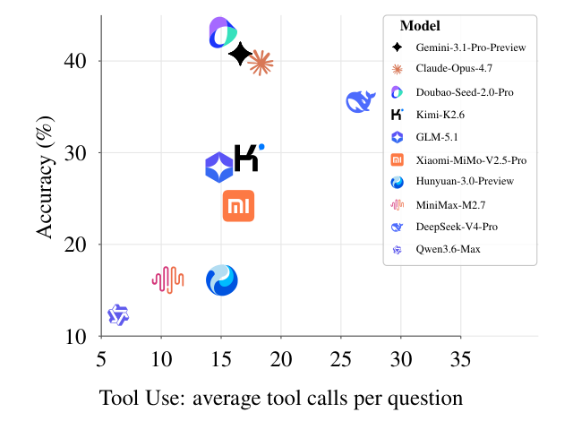
Figure 4: Performance–efficiency trade-off under neutral prompting.
example, Claude-Opus-4.7 exhibits relatively high tool-use frequency among evaluated models, yet its accuracy still remains below Gemini-3.1-Pro and Doubao-Seed-2.0-Pro. Meanwhile, several models also perform frequent retrieval actions while still achieving poor end-to-end performance. These observations suggest that DISCOBENCH does not reward excessive or inefficient retrieval behavior. Successful clarification-aware deep search depends not on searching more, but on whether models can strategically allocate retrieval actions, identify am- biguity at the correct checkpoints, and effectively utilize retrieved evidence and user-provided clues to recover the reasoning trajectory.
例如，Claude-Opus-4.7 的工具使用频率在受评模型中相对较高，准确率却仍不及 Gemini-3.1-Pro 与 Doubao-Seed-2.0-Pro；同时，也有若干模型检索频繁而端到端表现依旧不佳。这些观察表明，DISCOBENCH 并不奖励过度或低效的检索行为。澄清感知深度搜索的成败，不在于搜得多，而在于模型能否策略性地分配检索动作、在正确的检查点识别歧义，并有效利用检索证据与用户线索恢复推理轨迹。
5.3Performance by Ambiguity Types5.3 按歧义类型划分的性能
tection rather than downstream reasoning, suggest- ing that Guided prompting primarily helps reduce missed ambiguity cases. However, additional in- teraction does not always translate into better end- to-end performance. For example, Claude-Opus- 4.7 achieves a higher checkpoint pass rate under Guided prompting while slightly decreasing in final accuracy, indicating that stronger local interaction behavior may still fail to recover the complete rea- soning trajectory. Overall, prompt engineering can partially activate ambiguity-aware behavior, but current models still lack robust and stable clarifica- tion ability. Additional analysis by reasoning effort is provided in Appendix C, showing that higher reasoning effort improves performance.
测而非下游推理——这表明引导式提示的主要作用是减少歧义漏检。然而，交互增多并不必然带来更好的端到端性能：例如 Claude-Opus-4.7 在引导式提示下检查点通过率更高，最终准确率却略有下降，说明更强的局部交互行为仍可能无法复原完整推理轨迹。总体来看，提示工程能部分激活歧义感知行为，但当前模型仍缺乏鲁棒而稳定的澄清能力。按推理力度划分的进一步分析见附录 C：更高的推理力度可提升性能。
Fig. 5 shows that models exhibit clear differences in detection performance across ambiguity types. Stronger models, such as Gemini-3.1-Pro and Doubao-Seed-2.0-Pro, generally achieve more bal- anced performance, while mid-performing models, such as DeepSeek-V4-Pro and Claude-Opus-4.7, show a more type-dependent pattern. In particu- lar, Factual Inaccuracy is often easier to detect, likely because factual errors tend to create explicit conflicts with retrieved evidence, helping models recognize that the current question cannot be di- rectly resolved. In contrast, Entity and Criteria ambiguities are more challenging because they usu- ally do not create explicit factual conflicts. Instead, they require models to distinguish among multi- ple plausible entities or identify missing decision criteria, making models more likely to follow one plausible path prematurely. This suggests that cur- rent search agents still struggle with ambiguities that require active clarification rather than direct fact checking. Additional analysis by ambiguity complexity is provided in Appendix D.
图 5 显示，各模型在不同歧义类型上的检测性能差异明显。Gemini-3.1-Pro、Doubao-Seed-2.0-Pro 等更强模型表现总体更为均衡；DeepSeek-V4-Pro、Claude-Opus-4.7 等中等性能模型则更依赖歧义类型。其中，Factual Inaccuracy 通常更易检测——事实错误往往与检索证据形成显式冲突，提示模型当前问题无法直接求解；Entity 与 Criteria 歧义则更具挑战：二者通常不产生显式事实冲突，而要求模型在多个合理实体间做出区分、或识别缺失的决策标准，模型因而更容易过早锁定单条合理路径。这表明当前搜索智能体仍难以应对需要主动澄清、而非直接事实核查的歧义。按歧义复杂度的进一步分析见附录 D。
Knowing when to ask and asking effectively are distinct capabilities. Detection and clarification metrics capture different aspects of proactive inter- action: recognizing when clarification is needed and asking questions that effectively resolve am- biguity. These abilities are not always aligned. Qwen3.6-Max has only 16.0% detection F1 and asks just 0.07 questions per task under the Neu- tral setting, but achieves 94.7% CE-A and 89.5% CE-B, indicating strong conditional question qual- ity but weak proactive clarification. By contrast, MiniMax-M2.7 asks more often, with 0.61/1.10 asks under Neutral/Guided settings, yet its CE-B remains lower at 60.7%/66.5%. Thus, successful clarification-aware search requires both ambiguity detection and effective question asking.
知道何时问与问得有效，是两种不同的能力。检测与澄清指标分别刻画主动交互的两个侧面：识别何时需要澄清，以及提出足以消解歧义的问题。二者并不总是同步：Qwen3.6-Max 在 Neutral 设定下检测 F1 仅 16.0%、每任务仅提问 0.07 次，CE-A 与 CE-B 却高达 94.7% 与 89.5%——问题质量有条件保障，主动澄清却不足；相反，MiniMax-M2.7 提问更频繁（Neutral/Guided 下分别为 0.61/1.10 次），CE-B 却偏低，仅 60.7%/66.5%。可见，成功的澄清感知搜索需要歧义检测与有效提问兼备。
5.4Behavioral Profile Analysis5.4 行为画像分析
To better understand the behavioral differences be- hind model performance, we categorize ambiguous- checkpoint trajectories into four interaction profiles based on the ordering of SEARCH and ASK actions: DirectGuess, SearchHeavyGuess, DirectAsk, and SearchThenAsk. Detailed definitions and profile distributions are provided in Appendix E.
为剖析模型性能背后的行为差异，我们依据 SEARCH 与 ASK 动作的先后顺序，将歧义检查点轨迹归为四种交互画像：DirectGuess、SearchHeavyGuess、DirectAsk 与 SearchThenAsk。详细定义与画像分布见附录 E。
More tool use does not necessarily lead to better performance. Fig. 4 further reveals that higher retrieval intensity does not consistently translate into better task performance. Increasing search tool calls alone cannot reliably improve accuracy. For
工具用得多，性能未必更好。图 4 进一步显示，检索强度的提高并不稳定地转化为更优的任务表现——仅靠增加搜索工具调用无法可靠提升准确率。例如，
Clarification substantially improves success rates. As shown in Tab. 3, SearchThenAsk con- sistently achieves the highest pass rate across all evaluated models, reaching an average of 93.4%,
澄清显著提升成功率。如表 3 所示，SearchThenAsk 在所有受评模型上均取得最高通过率，平均达 93.4%，
7
7
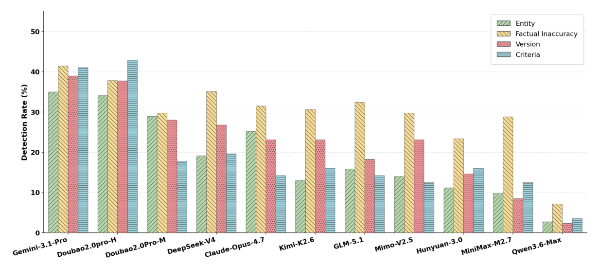
Figure 5: Detection performance across different ambiguity types.
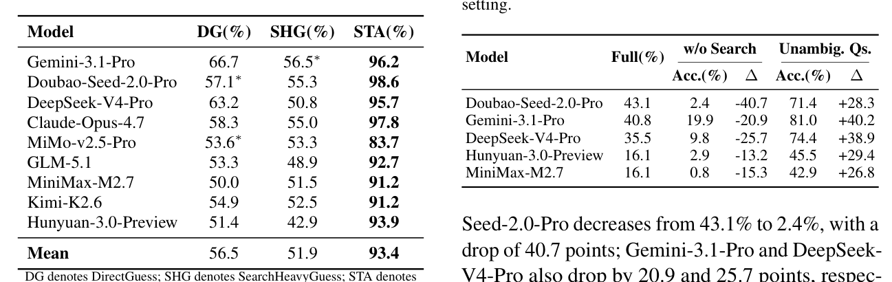
Table 3: Pass rate by behavioral profile on the common subset (N = 146 ambi-CPs).
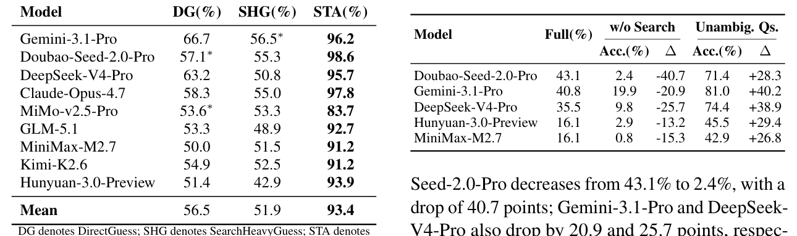
Table 4: Ablation results under neutral prompting. Full denotes the original DISCOBENCH accuracy from the main setting.
Seed-2.0-Pro decreases from 43.1% to 2.4%, with a drop of 40.7 points; Gemini-3.1-Pro and DeepSeek- V4-Pro also drop by 20.9 and 25.7 points, respec- tively. This indicates that DISCOBENCH cannot be solved by relying solely on parametric knowledge. Models need external retrieval to gather evidence, verify intermediate constraints, and continuously revise the search trajectory.
Seed-2.0-Pro 从 43.1% 跌至 2.4%，降幅达 40.7 个百分点；Gemini-3.1-Pro 与 DeepSeek-V4-Pro 也分别下滑 20.9 与 25.7 个百分点。可见 DISCOBENCH 无法仅凭参数知识求解：模型必须借助外部检索收集证据、验证中间约束，并持续修正搜索轨迹。
substantially outperforming DirectGuess (56.5%) and SearchHeavyGuess (51.9%). The gap remains stable within every model, indicating that proac- tive clarification is critical for successful ambiguity resolution in deep search.
大幅领先 DirectGuess（56.5%）与 SearchHeavyGuess（51.9%）。该差距在每个模型内部均保持稳定，说明主动澄清是深度搜索中成功消歧的关键。
Effect of Ambiguity. The comparison with un- ambiguous questions further shows that ambiguity is a major source of task difficulty. After removing ambiguity, all models achieve significantly higher accuracy, with improvements ranging from 26.8% to 40.2%. This suggests that current search agents are better at answering well-specified questions, but still easily fail when facing ambiguous ones.
歧义的影响。与无歧义问题的对比进一步印证：歧义是任务难度的主要来源。去除歧义后，所有模型准确率显著上升，提升幅度介于 26.8% 至 40.2% 之间。可见当前搜索智能体擅长回答定义明确的问题，面对歧义问题却依然容易失手。
Search-heavy guessing reveals a major failure mode. Notably, SearchHeavyGuess even under- performs DirectGuess despite performing more re- trieval steps. Repeated retrieval often indicates that the model is already aware of multiple candidate entities. Therefore, these failures arise not from completely missing ambiguity, but from failing to escalate retrieval uncertainty into clarification. This finding further explains why increased tool use alone does not reliably improve performance.
重搜索式猜测暴露一种主要失败模式。值得注意，SearchHeavyGuess 虽执行了更多检索步骤，表现反而不如 DirectGuess。反复检索往往意味着模型已察觉存在多个候选实体——因此此类失败并非源于完全没意识到歧义，而是没能把检索不确定性升级为向用户澄清。这也进一步解释了为何仅靠增加工具调用无法可靠提升性能。
6Conclusion6 结论
We introduced DISCOBENCH, a benchmark for
我们提出了 DISCOBENCH——一个用于
evaluating clarification-aware deep search. DIS-
评估澄清感知深度搜索的基准。DIS-
5.5Ablation Study5.5 消融实验
COBENCH models ambiguity as a dynamic issue that emerges during multi-step search and uses structured checkpoints to evaluate whether search agents can detect ambiguity, ask for clarification, and recover correct reasoning paths with user-
COBENCH 将歧义建模为多步搜索中涌现的动态问题，并以结构化检查点考察搜索智能体能否检测歧义、请求澄清，以及能否借助用户线索恢复正确的推理路径。
Effect of Search Tool. Tab. 4 shows that the external search tool is crucial for DISCOBENCH. After removing the search tool, all models suffer substantial accuracy drops. For example, Doubao-
搜索工具的影响。表 4 表明外部搜索工具对 DISCOBENCH 至关重要：移除搜索工具后，所有模型准确率均大幅下滑。例如，Doubao-
8
8
provided clues. Experiments show that current LLM-based search agents still struggle with inter- active deep search. Guided prompting improves ambiguity detection, but end-to-end performance remains limited. Meanwhile, proactive clarification is substantially more effective than repeated search or direct guessing. These findings suggest that fu- ture search agents need not only stronger retrieval and reasoning abilities, but also better ambiguity awareness and interaction planning.
的线索。实验表明，当前基于 LLM 的搜索智能体仍难以胜任交互式深度搜索：引导式提示虽改善了歧义检测，端到端性能却依然有限；而主动澄清远比反复搜索或直接猜测有效。这些发现提示，未来的搜索智能体不仅要有更强的检索与推理能力，还要具备更好的歧义意识与交互规划。
Mingyi Deng, Lijun Huang, Yani Fan, Jiayi Zhang,
[REF] 原样保留英文文献列表
Fashen Ren, Jinyi Bai, Fuzhen Yang, Dayi Miao, Zhaoyang Yu, Yifan Wu, and 1 others. 2025. Inter- actcomp: Evaluating search agents with ambiguous queries. arXiv preprint arXiv:2510.24668.
[REF] 原样保留英文文献列表
Xiang Deng, Yu Gu, Boyuan Zheng, Shijie Chen, Sam
[REF] 原样保留英文文献列表
Stevens, Boshi Wang, Huan Sun, and Yu Su. 2023. Mind2web: Towards a generalist agent for the web. Advances in Neural Information Processing Systems,
[REF] 原样保留英文文献列表
36:28091–28114.
[REF] 原样保留英文文献列表
Yingchaojie Feng, Qiang Huang, Xiaoya Xie, Zhaorui
[REF] 原样保留英文文献列表
Yang, Jun Yu, Wei Chen, and Anthony KH Tung.
[REF] 原样保留英文文献列表
Limitations局限
2026. Idrbench: Interactive deep research bench- mark. arXiv preprint arXiv:2601.06676.
[REF] 原样保留英文文献列表
DISCOBENCH primarily focuses on four represen- tative ambiguity types grounded in objective ques- tion answering scenarios. More complex forms of ambiguity, such as subjective preference ambigu- ity, remain underexplored and are left for future work. In addition, although DISCOBENCH em- ploys an ambiguity-aware multi-turn user simula- tor with progressive clue disclosure, the interaction behavior is still generated by LLMs rather than real human users. As a result, the current simulator may not fully capture the diversity, noisiness, and unpre- dictability of real-world clarification interactions.
DISCOBENCH 主要聚焦根植于客观问答场景的四种代表性歧义类型；主观偏好歧义等更复杂的形式仍待探索，留作未来工作。此外，尽管 DISCOBENCH 配备渐进揭示线索的歧义感知多轮用户模拟器，其交互行为仍由 LLM 生成，并非真实用户。因此，当前模拟器未必能完整再现真实澄清交互的多样性、噪声与不可预测性。
Romain Froger, Pierre Andrews, Matteo Bettini, Amar
[REF] 原样保留英文文献列表
Budhiraja, Ricardo Silveira Cabral, Virginie Do, Em- ilien Garreau, Jean-Baptiste Gaya, Hugo Laurençon, Maxime Lecanu, and 1 others. 2026. Gaia2: Bench- marking llm agents on dynamic and asynchronous environments. arXiv preprint arXiv:2602.11964.
[REF] 原样保留英文文献列表
Google. 2025. Gemini deep research. https:// gemini.google/overview/deep-research/. Ac- cessed: 2026-04-13.
[REF] 原样保留英文文献列表
Meiqi Guo, Mingda Zhang, Siva Reddy, and Malihe
[REF] 原样保留英文文献列表
Alikhani. 2021. Abg-coqa: Clarifying ambiguity in conversational question answering. In 3rd Confer- ence on Automated Knowledge Base Construction.
[REF] 原样保留英文文献列表
Ethical Considerations伦理考量
Yichen He, Guanhua Huang, Peiyuan Feng, Yuan Lin,
[REF] 原样保留英文文献列表
DISCOBENCH is constructed from publicly avail- able web resources, including encyclopedic web- sites and search engine result pages, and does not involve private or personally identifiable informa- tion. The benchmark is designed solely for research purposes to evaluate ambiguity handling and clar- ification abilities in search agents. Although the user simulator is LLM-based rather than collected from real users, we acknowledge that simulated interactions may not fully reflect the diversity of real-world human behavior.
DISCOBENCH 基于公开可得的网络资源构建（含百科网站与搜索引擎结果页面），不涉及私人或可识别个人的信息。该基准仅面向研究用途，用于评估搜索智能体的歧义处理与澄清能力。用户模拟器虽基于 LLM 而非真实用户数据，我们也承认：模拟交互未必能完全反映真实人类行为的多样性。
Yuchen Zhang, Hang Li, and 1 others. 2025. Pasa: An llm agent for comprehensive academic paper search. In Proceedings of the 63rd Annual Meet- ing of the Association for Computational Linguistics (Volume 1: Long Papers), pages 11663–11679.
[REF] 原样保留英文文献列表
Xanh Ho, Anh-Khoa Duong Nguyen, Saku Sugawara,
[REF] 原样保留英文文献列表
and Akiko Aizawa. 2020. Constructing a multi-hop qa dataset for comprehensive evaluation of reasoning steps. In Proceedings of the 28th International Con- ference on Computational Linguistics, pages 6609– 6625.
[REF] 原样保留英文文献列表
Jiabao Ji, Min Li, Priyanshu Kumar, Shiyu Chang, and
[REF] 原样保留英文文献列表
Saloni Potdar. 2025. Deepambigqa: Ambiguous multi-hop questions for benchmarking llm answer completeness. arXiv preprint arXiv:2511.01323.
[REF] 原样保留英文文献列表
References参考文献
Mohammad Aliannejadi, Hamed Zamani, Fabio Crestani, and W Bruce Croft. 2019. Asking clari- fying questions in open-domain information-seeking conversations. In Proceedings of the 42nd interna- tional acm sigir conference on research and develop- ment in information retrieval, pages 475–484.
[REF] 原样保留英文文献列表
Jing Yu Koh, Robert Lo, Lawrence Jang, Vikram
[REF] 原样保留英文文献列表
Duvvur, Ming Lim, Po-Yu Huang, Graham Neu- big, Shuyan Zhou, Russ Salakhutdinov, and Daniel Fried. 2024. Visualwebarena: Evaluating multimodal agents on realistic visual web tasks. In Proceedings of the 62nd Annual Meeting of the Association for Computational Linguistics (Volume 1: Long Papers), pages 881–905.
[REF] 原样保留英文文献列表
Zijian Chen, Xueguang Ma, Shengyao Zhuang, Ping
[REF] 原样保留英文文献列表
Nie, Kai Zou, Andrew Liu, Joshua Green, Kshama Patel, Ruoxi Meng, Mingyi Su, and 1 others. 2025. Browsecomp-plus: A more fair and transparent eval- uation benchmark of deep-research agent. arXiv preprint arXiv:2508.06600.
[REF] 原样保留英文文献列表
Tom Kwiatkowski, Jennimaria Palomaki, Olivia Red-
[REF] 原样保留英文文献列表
field, Michael Collins, Ankur Parikh, Chris Alberti, Danielle Epstein, Illia Polosukhin, Jacob Devlin, Ken- ton Lee, and 1 others. 2019. Natural questions: a
[REF] 原样保留英文文献列表
9
9
benchmark for question answering research. Trans- actions of the Association for Computational Linguis- tics, 7:453–466.
[REF] 原样保留英文文献列表
Xiaofeng Shi, Yuduo Li, Qian Kou, Longbin Yu, Jinxin
[REF] 原样保留英文文献列表
Xie, and Hua Zhou. 2025. Spar: Scholar paper re- trieval with llm-based agents for enhanced academic search. arXiv preprint arXiv:2507.15245.
[REF] 原样保留英文文献列表
Tian Lan, Bin Zhu, Qianghuai Jia, Junyang Ren, Haijun
[REF] 原样保留英文文献列表
Ivan Stelmakh, Yi Luan, Bhuwan Dhingra, and Ming-
[REF] 原样保留英文文献列表
Li, Longyue Wang, Zhao Xu, Weihua Luo, and Kaifu Zhang. 2025. Deepwidesearch: Benchmarking depth and width in agentic information seeking. arXiv preprint arXiv:2510.20168.
[REF] 原样保留英文文献列表
Wei Chang. 2022. Asqa: Factoid questions meet long-form answers. In Proceedings of the 2022 Con- ference on Empirical Methods in Natural Language Processing, pages 8273–8288.
[REF] 原样保留英文文献列表
Zongxi Li, Yang Li, Haoran Xie, and S Joe Qin. 2025.
[REF] 原样保留英文文献列表
Tavily Inc. 2026. Tavily docs. https://docs.tavily.
[REF] 原样保留英文文献列表
Condambigqa: A benchmark and dataset for condi- tional ambiguous question answering. In Proceed- ings of the 2025 Conference on Empirical Methods in Natural Language Processing, pages 2269–2288.
[REF] 原样保留英文文献列表
com/welcome.
[REF] 原样保留英文文献列表
Harsh Trivedi, Niranjan Balasubramanian, Tushar Khot,
[REF] 原样保留英文文献列表
and Ashish Sabharwal. 2022. musique: Multi- hop questions via single-hop question composition. Transactions of the Association for Computational Linguistics, 10:539–554.
[REF] 原样保留英文文献列表
Alisa Liu, Zhaofeng Wu, Julian Michael, Alane Suhr,
[REF] 原样保留英文文献列表
Peter West, Alexander Koller, Swabha Swayamdipta, Noah A Smith, and Yejin Choi. 2023. We’re afraid language models aren’t modeling ambiguity. In Pro- ceedings of the 2023 conference on empirical meth- ods in natural language processing, pages 790–807.
[REF] 原样保留英文文献列表
Jason Wei, Zhiqing Sun, Spencer Papay, Scott McK-
[REF] 原样保留英文文献列表
inney, Jeffrey Han, Isa Fulford, Hyung Won Chung, Alex Tachard Passos, William Fedus, and Amelia Glaese. 2025. Browsecomp: A simple yet challeng- ing benchmark for browsing agents. arXiv preprint arXiv:2504.12516.
[REF] 原样保留英文文献列表
Xiao Liu, Hao Yu, Hanchen Zhang, Yifan Xu, Xuanyu
[REF] 原样保留英文文献列表
Lei, Hanyu Lai, Yu Gu, Hangliang Ding, Kaiwen Men, Kejuan Yang, and 1 others. 2024. Agentbench: Evaluating llms as agents. In International Con- ference on Learning Representations, volume 2024, pages 52989–53046.
[REF] 原样保留英文文献列表
Ryan Wong, Jiawei Wang, Junjie Zhao, Li Chen, Yan
[REF] 原样保留英文文献列表
Gao, Long Zhang, Xuan Zhou, Zuo Wang, Kai Xiang, Ge Zhang, and 1 others. 2025. Widesearch: Bench- marking agentic broad info-seeking. arXiv preprint arXiv:2508.07999.
[REF] 原样保留英文文献列表
Grégoire Mialon, Clémentine Fourrier, Thomas Wolf,
[REF] 原样保留英文文献列表
Yann LeCun, and Thomas Scialom. 2023. Gaia: a
[REF] 原样保留英文文献列表
benchmark for general ai assistants. In The Twelfth International Conference on Learning Representa- tions.
[REF] 原样保留英文文献列表
Jialong Wu, Wenbiao Yin, Yong Jiang, Zhenglin Wang,
[REF] 原样保留英文文献列表
Zekun Xi, Runnan Fang, Linhai Zhang, Yulan He, Deyu Zhou, Pengjun Xie, and 1 others. 2025. Web- walker: Benchmarking llms in web traversal. In Proceedings of the 63rd Annual Meeting of the As- sociation for Computational Linguistics (Volume 1: Long Papers), pages 10290–10305.
[REF] 原样保留英文文献列表
Sewon Min, Julian Michael, Hannaneh Hajishirzi, and
[REF] 原样保留英文文献列表
Luke Zettlemoyer. 2020. Ambigqa: Answering am- biguous open-domain questions. In Proceedings of the 2020 conference on empirical methods in natural language processing (EMNLP), pages 5783–5797.
[REF] 原样保留英文文献列表
Yunjia Xi, Jianghao Lin, Yongzhao Xiao, Zheli Zhou,
[REF] 原样保留英文文献列表
OpenAI. 2025. Introducing deep re- search. https://openai.com/index/ introducing-deep-research/. Accessed: 2026-04-13.
[REF] 原样保留英文文献列表
Rong Shan, Te Gao, Jiachen Zhu, Weiwen Liu, Yong Yu, and Weinan Zhang. 2025. A survey of
[REF] 原样保留英文文献列表
llm-based deep search agents: Paradigm, optimiza- tion, evaluation, and challenges. arXiv preprint arXiv:2508.05668.
[REF] 原样保留英文文献列表
Bhawna Piryani, Abdelrahman Abdallah, Jamshid
[REF] 原样保留英文文献列表
Mozafari, and Adam Jatowt. 2024. Detecting tem- poral ambiguity in questions. In Findings of the Association for Computational Linguistics: EMNLP 2024, pages 9620–9634.
[REF] 原样保留英文文献列表
Shunyu Yao, Howard Chen, John Yang, and Karthik
[REF] 原样保留英文文献列表
Narasimhan. 2022. Webshop: Towards scalable real- world web interaction with grounded language agents. Advances in Neural Information Processing Systems,
[REF] 原样保留英文文献列表
35:20744–20757.
[REF] 原样保留英文文献列表
Cheng Qian, Bingxiang He, Zhong Zhuang, Jia Deng,
[REF] 原样保留英文文献列表
Hamed Zamani, Bhaskar Mitra, Everest Chen, Gord
[REF] 原样保留英文文献列表
Yujia Qin, Xin Cong, Zhong Zhang, Jie Zhou, Yankai
[REF] 原样保留英文文献列表
Lueck, Fernando Diaz, Paul N Bennett, Nick Craswell, and Susan T Dumais. 2020. Analyzing and learning from user interactions for search clar- ification. In Proceedings of the 43rd international acm sigir conference on research and development in information retrieval, pages 1181–1190.
[REF] 原样保留英文文献列表
Lin, Zhiyuan Liu, and 1 others. 2024. Tell me more! towards implicit user intention understanding of lan- guage model driven agents. In Proceedings of the 62nd Annual Meeting of the Association for Compu- tational Linguistics (Volume 1: Long Papers), pages 1088–1113.
[REF] 原样保留英文文献列表
Michael Zhang and Eunsol Choi. 2021. Situatedqa: In-
[REF] 原样保留英文文献列表
Cheng Qian, Zuxin Liu, Akshara Prabhakar, Zhiwei Liu,
[REF] 原样保留英文文献列表
corporating extra-linguistic contexts into qa. In Pro- ceedings of the 2021 Conference on Empirical Meth- ods in Natural Language Processing, pages 7371– 7387.
[REF] 原样保留英文文献列表
Jianguo Zhang, Haolin Chen, Heng Ji, Weiran Yao, Shelby Heinecke, Silvio Savarese, and 1 others. 2025. Userbench: An interactive gym environment for user- centric agents. arXiv preprint arXiv:2507.22034.
[REF] 原样保留英文文献列表
10
10
metrics are computed at the question level or check- point level and then averaged over all valid ques- tions for each model.
各指标在问题级或检查点级计算，再对每个模型在全部有效问题上取平均。
Peilin Zhou, Bruce Leon, Xiang Ying, Can Zhang, Yi-
[REF] 原样保留英文文献列表
fan Shao, Qichen Ye, Dading Chong, Zhiling Jin, Chenxuan Xie, Meng Cao, and 1 others. 2025a. Browsecomp-zh: Benchmarking web browsing abil- ity of large language models in chinese. arXiv preprint arXiv:2504.19314.
[REF] 原样保留英文文献列表
B.1 End-to-End AccuracyB.1 端到端准确率
End-to-end accuracy evaluates whether the agent’s final answer to the full question matches the ground-truth answer. Equivalence between the two answers is determined by an LLM-based answer- equivalence judge, which abstracts away surface- form variations such as transliterations, date for- mats, and list ordering.
端到端准确率评估智能体对完整问题的最终答案是否与标准答案一致。答案等价与否由基于 LLM 的等价判定器裁定，音译、日期格式、列表顺序等表层差异会被抽象掉。
Shuyan Zhou, Frank F Xu, Hao Zhu, Xuhui Zhou,
[REF] 原样保留英文文献列表
Robert Lo, Abishek Sridhar, Xianyi Cheng, Tianyue Ou, Yonatan Bisk, Daniel Fried, and 1 others. 2024. Webarena: A realistic web environment for build- ing autonomous agents. In International Conference on Learning Representations, volume 2024, pages 15585–15606.
[REF] 原样保留英文文献列表
Yifei Zhou, Song Jiang, Yuandong Tian, Jason Weston,
[REF] 原样保留英文文献列表
For each question q, let ˆaq denote the agent’s final answer and a⋆
对每个问题 q，令 ˆaq 表示智能体的最终答案，a⋆
Sergey Levine, Sainbayar Sukhbaatar, and Xian Li. 2025b. Sweet-rl: Training multi-turn llm agents on collaborative reasoning tasks. arXiv preprint arXiv:2503.15478.
[REF] 原样保留英文文献列表
q the ground-truth answer, and let equiv(ˆaq, a⋆
q 表示标准答案，并令 equiv(ˆaq, a⋆
q) ∈{0, 1} denote the judge’s binary verdict, where 1 indicates that the two answers are judged equivalent and 0 otherwise. The per- question correctness indicator is defined as:
q) ∈{0, 1} 表示判定器的二元判定，其中 1 表示两答案被判等价，0 则否。问题级正确性指标定义为：
AAuthor ContributionsA 作者贡献
Benchmark Design and Methodology. Yiling Tao, Shihan Deng, Zhihao Zhu, and Pengzhi Wei jointly contributed to the design of DISCOBENCH, and the overall methodology was integrated and proposed by Shihan Deng and Yiling Tao.
基准设计与方法。Yiling Tao、Shihan Deng、Zhihao Zhu 与 Pengzhi Wei 共同参与 DISCOBENCH 的设计，总体方法由 Shihan Deng 与 Yiling Tao 整合并提出。
ˆaq, a⋆
ˆaq, a⋆
�
�
Acc(q) = equiv
Acc(q) = equiv
. (2)
. (2)
The model-level end-to-end accuracy is com- puted by averaging over all valid questions:
模型级端到端准确率由对所有有效问题取平均得到：
Data Construction and Annotation. Shihan Deng led the construction of the multi-hop seed data, while Yiling Tao led the ambiguity data con- struction pipeline. Shihan Deng, Zhihao Zhu, Yil- ing Tao, and Pengzhi Wei were responsible for the critical quality control and final verification of the constructed data.
数据构建与标注。多跳种子数据构建由 Shihan Deng 主导，歧义数据构建流程由 Yiling Tao 主导；Shihan Deng、Zhihao Zhu、Yiling Tao 与 Pengzhi Wei 负责所构数据的关键质量控制与最终核验。
Acc = 1 |Q|
Acc = 1 |Q|
X
X
Acc(q), (3)
Acc(q), (3)
where Q denotes the set of valid evaluated ques- tions. This question-level normalization ensures that each question contributes equally to the final score.
其中 Q 表示有效受评问题的集合。这种问题级归一化保证每个问题对最终得分的贡献相同。
Evaluation Framework and User Simulator. Yiling Tao and Shihan Deng jointly designed the
评估框架与用户模拟器。Yiling Tao 与 Shihan Deng 共同设计了
B.2 Checkpoint Pass RateB.2 检查点通过率
framework, and Shihan Deng was primarily respon- sible for its code construction and implementation.
该框架，其代码构建与实现主要由 Shihan Deng 负责。
Each question in DISCOBENCH is decomposed into a sequence of checkpoints. A checkpoint is counted as successfully advanced if the agent either answers the checkpoint correctly and proceeds to the next checkpoint, or correctly completes the final checkpoint. In our evaluator logs, this corresponds to one of two outcomes: (1) correct_answer, where the agent correctly resolves a regular check- point; (2) missed_ambiguity_correct, where the agent misses the ambiguity at an ambiguous checkpoint but still happens to answer it correctly.
DISCOBENCH 将每个问题分解为检查点序列。若智能体正确作答某检查点并进入下一检查点，或正确完成末个检查点，该检查点计为成功推进。在评估器日志中，这对应两种结果之一：(1) correct_answer——智能体正确解决常规检查点；(2) missed_ambiguity_correct——智能体在歧义检查点漏检歧义，但碰巧作答正确。
Experiments and Analysis. Shihan Deng con- ducted the main experiments. The result analysis was performed by Yiling Tao, Shihan Deng, and Zhihao Zhu.
实验与分析。主实验由 Shihan Deng 完成，结果分析由 Yiling Tao、Shihan Deng 与 Zhihao Zhu 协作完成。
Paper Writing. Yiling Tao led the paper writing, and Meiling Tao produced all the figures and orga- nized the key information. Zhihao Zhu and Shihan Deng participated in revising the manuscript.
论文写作。论文写作由 Yiling Tao 主导，Meiling Tao 制作全部图表并整理关键信息，Zhihao Zhu 与 Shihan Deng 参与稿件修订。
For each question q, let Nq denote the ground- truth number of checkpoints, and let Aq denote the number of checkpoints that are successfully advanced. The checkpoint pass score for question q is defined as:
对每个问题 q，令 Nq 表示标准检查点数，Aq 表示成功推进的检查点数。问题 q 的检查点通过得分定义为：
Project Supervision. Zhichao Hu and Zhihao Zhu supervised the project and served as the corre- sponding authors.
项目监督。项目由 Zhichao Hu 与 Zhihao Zhu 监督，二人同为通讯作者。
BEvaluation MetricsB 评估指标
This section provides detailed definitions of the evaluation metrics used in our experiments. All
本节给出实验所用评估指标的详细定义。所有
CP(q) = Aq
CP(q) = Aq
. (4)
. (4)
Nq
Nq
11
11
The model-level checkpoint pass rate is com- puted by averaging over all valid questions:
模型级检查点通过率由对所有有效问题取平均得到：
The detection F1 score is computed as:
检测 F1 分数计算如下：
Detection F1 = 2 · P · R
Detection F1 = 2 · P · R
P + R . (8)
P + R . (8)
CP = 1 |Q|
CP = 1 |Q|
X
X
CP(q), (5)
CP(q), (5)
Here, recall measures the proportion of ambigu- ous checkpoints that are correctly detected, while precision measures how often the agent’s clarifica- tion decisions are correct. F1 provides a more ro- bust measure when ambiguous and non-ambiguous checkpoints are unevenly distributed.
其中，召回率衡量歧义检查点被正确检出的比例，精确率衡量智能体澄清决策的正确率。当歧义与非歧义检查点分布不均时，F1 是更稳健的度量。
where Q denotes the set of valid evaluated ques- tions. This question-level normalization ensures that each question contributes equally to the final score, regardless of how many checkpoints it con- tains.
其中 Q 表示有效受评问题的集合。这种问题级归一化保证每个问题对最终得分的贡献相同，与其所含检查点数量无关。
B.4 Clarification EffectivenessB.4 澄清有效性
B.3 Ambiguity Detection MetricsB.3 歧义检测指标
Clarification effectiveness evaluates the quality and usefulness of the agent’s clarification behavior. Both metrics share the same denominator: the num- ber of checkpoints where the agent actively invokes ASK, regardless of whether the question is correct.
澄清有效性评估智能体澄清行为的质量与实用价值。两项指标共用同一分母：智能体主动调用 ASK 的检查点数量，不问其提问是否正确。
We evaluate ambiguity detection at the checkpoint
我们在检查点
level. For each reached checkpoint, we compare the ground-truth checkpoint type with the agent’s inter- action behavior. A checkpoint is labeled as Ambi if it contains an injected ambiguity, and Non-Ambi otherwise. We define the four detection outcomes as follows:
级上评估歧义检测：对每个到达的检查点，将标准检查点类型与智能体的交互行为对照。含注入歧义的检查点标记为 Ambi，否则为 Non-Ambi。四种检测结果定义如下：
Let C denote the set of evaluated checkpoints, and let Casked denote the set of checkpoints where the agent invokes ASK:
令 C 为受评检查点集合，Casked 为智能体调用 ASK 的检查点集合：
• True Positive (TP): the checkpoint is Ambi, and the agent correctly asks a clarification question targeting the ambiguity.
• True Positive (TP)：检查点为 Ambi，且智能体正确提出针对该歧义的澄清问题。
Casked = {c ∈C : asked(c)}. (9)
Casked = {c ∈C : asked(c)}. (9)
We further define:
进而定义：
• False Negative (FN): the checkpoint is Ambi, but the agent fails to ask or does not correctly target the ambiguity.
• False Negative (FN)：检查点为 Ambi，但智能体未提问，或提问未正确针对该歧义。
Cright = {c ∈Casked : asked_right(c)}, (10)
Cright = {c ∈Casked : asked_right(c)}, (10)
Cadv = {c ∈Casked : cp_advanced(c)}. (11)
Cadv = {c ∈Casked : cp_advanced(c)}. (11)
• False Positive (FP): the checkpoint is Non- Ambi, but the agent unnecessarily asks for clar-
• False Positive (FP)：检查点为 Non-Ambi，但智能体不必要地请求澄
CE-A: Clarification Question Accuracy. CE-A measures whether the agent asks the right clarifica- tion question when it decides to interact:
CE-A：澄清问题准确率。CE-A 衡量智能体在决定交互时能否提出正确的澄清问题：
ification.
澄清。
• True Negative (TN): the checkpoint is Non- Ambi, and the agent proceeds without asking
• True Negative (TN)：检查点为 Non-Ambi，且智能体不提问而直接继续
CE-A = |Cright|
CE-A = |Cright|
|Casked|. (12)
|Casked|. (12)
for clarification.
澄清。
Accordingly, TP + FN corresponds to all reached ambiguous checkpoints, while FP + TN corresponds to all reached non-ambiguous check- points. The total number of evaluated detection decisions is TP + TN + FP + FN.
据此，TP + FN 对应全部到达的歧义检查点，FP + TN 对应全部到达的非歧义检查点；受评检测决策总数为 TP + TN + FP + FN。
CE-B: Clarification-to-Advance Rate. CE-B measures whether a correct clarification eventually helps the agent advance the current checkpoint:
CE-B：澄清推进率。CE-B 衡量一次正确的澄清最终能否帮助智能体推进当前检查点：
CE-B = |Cright ∩Cadv|
CE-B = |Cright ∩Cadv|
|Casked| . (13)
|Casked| . (13)
Detection Accuracy. Detection accuracy mea- sures the overall correctness of ambiguity detection decisions:
检测准确率。检测准确率衡量歧义检测决策的整体正确性：
CE-A reflects whether the agent asks in the correct direction, while CE-B further evaluates whether the agent can use the returned clue to suc- cessfully advance the checkpoint.
CE-A 反映智能体提问方向是否正确；CE-B 则进一步评估智能体能否利用返回线索成功推进检查点。
Detection Accuracy = TP + TN TP + TN + FP + FN .
Detection Accuracy = TP + TN TP + TN + FP + FN .
(6)
(6)
CAdditional Analysis by Reasoning EffortC 按推理力度划分的附加分析
Detection F1 Score. We further report detection F1 to better account for the imbalance between ambiguous and non-ambiguous checkpoints. Preci- sion and recall are defined as:
检测 F1 分数。考虑到歧义与非歧义检查点数量失衡，我们进一步报告检测 F1。精确率与召回率定义为：
Fig. 6 shows that increasing reasoning effort leads to consistent overall improvements. Tak- ing Doubao-Seed-2.0-Pro as an example, when the reasoning effort is increased from medium to
图 6 显示，提升推理力度可带来一致的总体改善。以 Doubao-Seed-2.0-Pro 为例，当推理力度自 medium 提升至
P = TP TP + FP , R = TP TP + FN . (7)
P = TP TP + FP , R = TP TP + FN . (7)
12
12
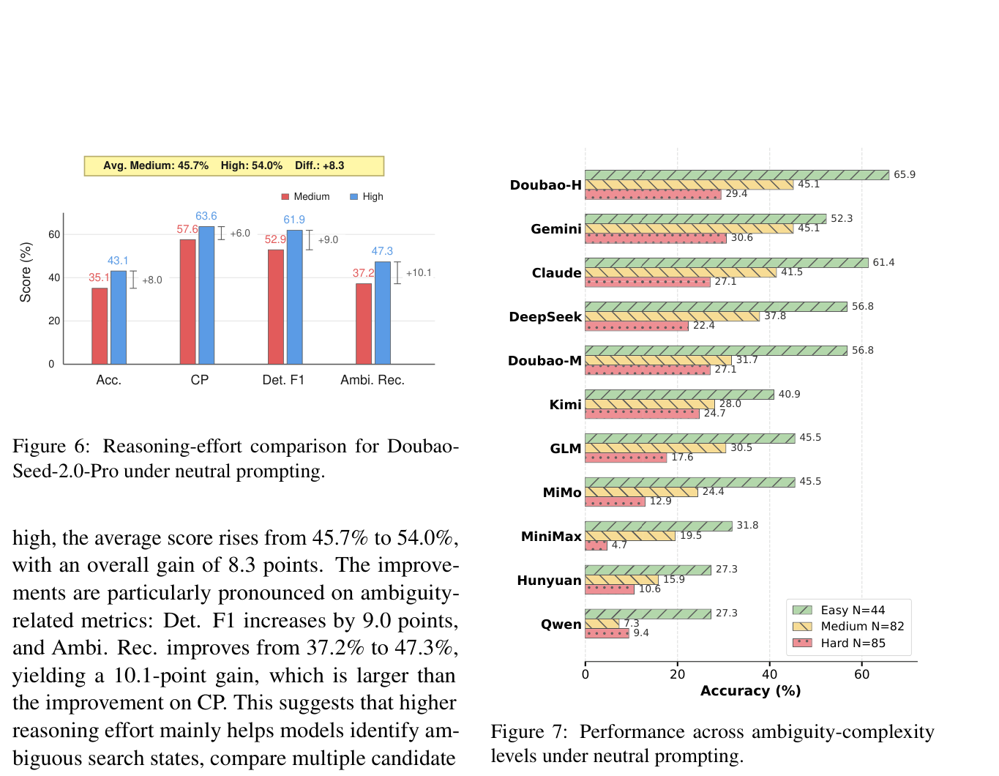
Figure 6: Reasoning-effort comparison for Doubao- Seed-2.0-Pro under neutral prompting.
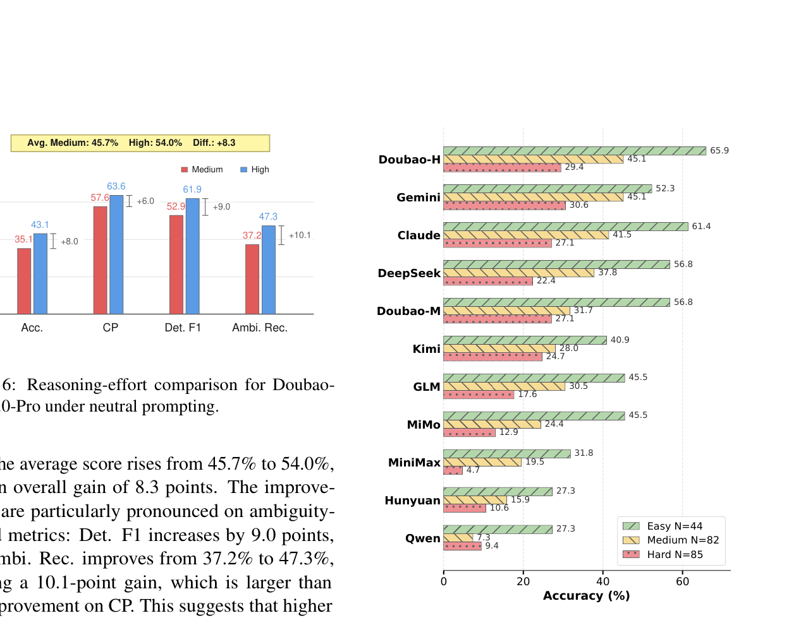
Figure 7: Performance across ambiguity-complexity levels under neutral prompting.
amples, their accuracy still drops markedly on Hard examples. This suggests that increasing ambiguity complexity challenges not only evidence retrieval, but also the model’s ability to recognize underspec- ified states and proactively request clarification dur- ing multi-step search.
样本，其在 Hard 样本上的准确率仍显著下滑。这说明歧义复杂性的提升不仅考验证据检索，也考验模型识别欠明确状态、并在多步搜索中主动请求澄清的能力。
This result is consistent with the characteristics of DISCOBENCH. Clarification-aware deep search requires models not only to retrieve the final an- swer, but also to continuously judge whether the evidence is sufficient across multiple ambiguity checkpoints, while maintaining and revising the search trajectory. However, even under the high- effort setting, the accuracy remains below 45% and Ambi. Rec. remains below 50%, indicating that simply increasing reasoning effort is still insuffi- cient for robust clarification-aware behavior. Mod- els still need stronger mechanisms for ambiguity localization, evidence verification, and deciding when to ask rather than directly guess.
该结果与 DISCOBENCH 的特性相符。澄清感知深度搜索要求模型不仅检索出最终答案，还要在多个歧义检查点上持续判断证据是否充分，并不断维护、修正搜索轨迹。然而，即便在高推理力度设定下，准确率仍不足 45%、Ambi. Rec. 仍不足 50%——可见仅靠提高推理力度，尚不足以形成鲁棒的澄清感知行为。模型仍需更强的歧义定位、证据验证机制，以及『何时提问而非直接猜测』的判断力。
The performance gap between Easy and Hard settings further indicates that stronger reasoning ability alone is insufficient for robust clarification- aware search. As ambiguity becomes more subtle and accumulates across multiple checkpoints, mod- els are increasingly prone to following plausible but incorrect search trajectories without initiating clarification. Lower-performing models exhibit the same downward trend from a lower baseline, indi- cating simultaneous weaknesses in both basic task completion and ambiguity resolution.
Easy 与 Hard 设定间的性能差距进一步说明：仅靠更强的推理能力，不足以支撑鲁棒的澄清感知搜索。歧义越隐蔽、越在多个检查点上累积，模型就越容易沿着貌似合理实则错误的搜索轨迹一路走到底而不发起澄清。表现较弱的模型自更低的基线呈同样下滑趋势，说明其在基础任务完成与歧义消解两方面俱有短板。
DAdditional Analysis by Ambiguity ComplexityD 按歧义复杂度划分的附加分析
EProfile Classification DetailsE 画像分类细节
Fig. 7 presents model performance across different levels of complexity of ambiguity under neutral prompting. Across nearly all evaluated models, ac- curacy consistently decreases from Easy to Hard, showing that ambiguity complexity introduces sub- stantial additional difficulty beyond ordinary re- trieval and reasoning. Although stronger mod- els such as Doubao-Seed-2.0-Pro (High), Gemini- 3.1-Pro, Claude-Opus-4.7, and DeepSeek-V4-Pro achieve relatively strong performance on Easy ex-
图 7 展示中性提示下各模型在不同歧义复杂度层级上的表现。几乎所有受评模型的准确率都随 Easy 到 Hard 一致下降，可见歧义复杂性在常规检索与推理之外引入了可观的额外难度。Doubao-Seed-2.0-Pro (High)、Gemini-3.1-Pro、Claude-Opus-4.7、DeepSeek-V4-Pro 等较强模型虽在 Easy 样
Behavioral profiles. We classify ambiguous- checkpoint trajectories into four profiles:
行为画像。我们将歧义检查点轨迹归为四种画像：
• DirectGuess: no ASK with search count ≤ K.
• DirectGuess：全程无 ASK，且搜索次数 ≤ K。
• SearchHeavyGuess: no ASK with search count > K.
• SearchHeavyGuess：全程无 ASK，且搜索次数 > K。
• DirectAsk: ask before any retrieval.
• DirectAsk：在任何检索之前先行提问。
13
13
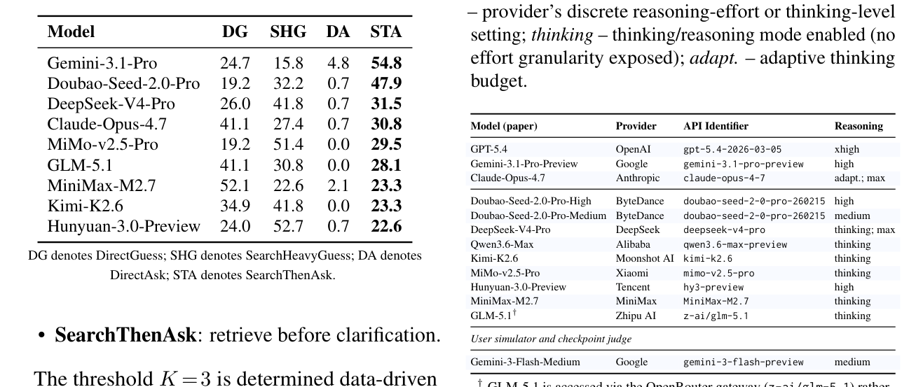
Table 5: Behavioral profile distribution (%) on the common subset (N =146 ambi-CPs). Models are sorted by STA ratio.
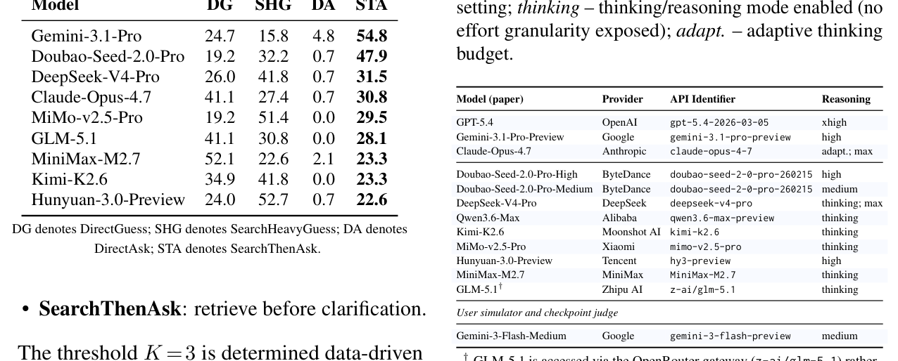
Table 6: Evaluated models and reasoning configura- tions. Reasoning shorthand: xhigh / high / medium – provider’s discrete reasoning-effort or thinking-level
The threshold K =3 is determined data-driven as the median search count among successful no- ask trajectories.
阈值 K =3 由数据驱动确定：取成功且无提问轨迹的搜索次数中位数。
DirectAsk rarity. DirectAsk is extremely rare, accounting for only 0–7 trajectories per model. For 7 of 9 models, the count satisfies N ≤1, indicating that current models almost never initiate clarifica- tion before retrieval.
DirectAsk 之罕见。DirectAsk 极为少见，每模型仅 0–7 条轨迹；9 个模型中有 7 个满足 N ≤1——当前模型几乎从不在检索前主动发起澄清。
a concurrency of 300; this asymmetry influences wall-clock evaluation cost but not per-question cor- rectness. All SEARCH calls are executed through Tavily regardless of the agent backbone. A single auxiliary model, Gemini-3-Flash-Medium running with thinking level set to medium, serves both as the simulated user that releases discriminative clues during clarification turns and as the checkpoint- level judge that scores each step; its configuration is listed in the bottom block of Tab. 6 and uses a concurrency of 100.
并发 300；这一不对称影响评估的挂钟时间成本，但不影响每题正确性判定。所有 SEARCH 调用一律经由 Tavily 执行，与智能体骨干无关。辅助模型仅一个——Gemini-3-Flash-Medium（thinking 设为 medium），既扮演澄清轮次中释放判别性线索的模拟用户，又担任为每步打分的检查点级判定器；其配置见表 6 底部区块，并发为 100。
Common Subset Robustness. The common sub- set contains 146 ambi-CPs reached by all 9 mod- els in Tab. 3. GPT-5.4 is excluded due to prompt filtering, while Qwen is excluded because of in- sufficient reach. Model rankings on the common subset remain highly consistent with the full dataset (Spearman ρ=0.95), indicating that the observed behavioral patterns are robust to reach-rate differ- ences.
公共子集鲁棒性。公共子集由表 3 中 9 个模型全部到达的 146 个歧义检查点组成；GPT-5.4 因提示过滤被剔除，Qwen 因到达量不足被剔除。各模型在公共子集上的排名与完整数据集高度一致（Spearman ρ=0.95），说明所观察到的行为模式对到达率差异是稳健的。
GToken ConsumptionG Token 消耗
To provide a supplementary reference for inference cost, we report the token consumption of the evalu- ated models in the main experiments and ablation studies. Tab. 7 summarizes the total input and out- put tokens under the Neutral and Guided prompt- ing settings. The Guided entry of GPT-5.4 is left blank because its Guided runs were excluded from the main analysis due to insufficient valid results. Doubao-Seed-2.0-Pro-Medium is included only for the reasoning-effort analysis under the Neutral set- ting, and therefore does not have a corresponding Guided entry.
为给推理成本提供补充参考，我们报告主实验与消融实验中各受评模型的 token 消耗。表 7 汇总了 Neutral 与 Guided 两种提示设定下的总输入/输出 token。GPT-5.4 的 Guided 条目留空——其 Guided 运行因有效结果不足而未纳入主分析；Doubao-Seed-2.0-Pro-Medium 仅参与 Neutral 设定下的推理力度分析，故无对应 Guided 条目。
FEvaluated Models and API ConfigurationsF 受评模型与 API 配置
Tab. 6 lists the API configuration of every model used in our main experiments and ablation studies, restricted to the information needed to reproduce a call: the model name used in the paper, the provider, the API identifier used at invocation time, and the reasoning- or thinking-mode setting. To control for the confound of reasoning budget, models expos- ing a configurable effort level are run at the highest available setting in the main experiments; Doubao- Seed-2.0-Pro-Medium is additionally included only for the reasoning-effort analysis in Appendix C. Frontier proprietary models (GPT-5.4, Gemini-3.1- Pro-Preview, and Claude-Opus-4.7) are restricted to a concurrency of 5 by provider-side rate lim- its, whereas the remaining agent endpoints permit
表 6 列出主实验与消融实验所用各模型的 API 配置，仅收录复现调用所需信息：论文中的模型名、提供商、调用时的 API 标识符，以及推理/思考模式设定。为排除推理预算这一混淆因素，凡暴露可配置力度级别的模型，主实验均以最高可用设定运行；Doubao-Seed-2.0-Pro-Medium 为附录 C 的推理力度分析而额外纳入。前沿专有模型（GPT-5.4、Gemini-3.1-Pro-Preview、Claude-Opus-4.7）受供应商限速约束、并发限于 5；其余智能体端点允许
Tab. 8 further reports token consumption for the two ablation settings used in the main text: remov- ing the search tool and evaluating on unambiguous questions. These ablation runs are conducted under neutral prompting and are reported separately from the main Neutral/Guided comparison.
表 8 进一步报告正文两项消融设定的 token 消耗：移除搜索工具，以及在无歧义问题上评估。消融运行均在中性提示下进行，与主 Neutral/Guided 对比分列呈现。
14
14
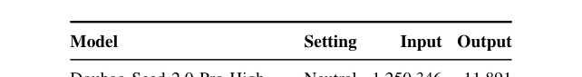
Table 7: Token consumption of evaluated models under the Neutral and Guided prompting settings.
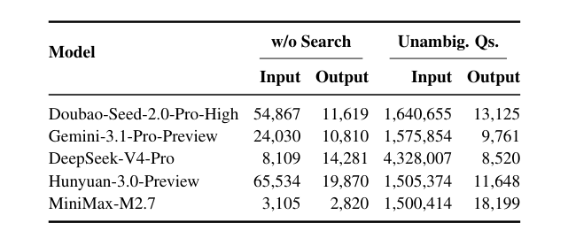
Table 8: Token consumption in the ablation studies under neutral prompting.
time-invariant. Every question is built on stable, verifiable factual knowledge, so the correct answer does not drift as the web changes. Tavily’s black- box behavior varies only the retrieval surface: which snippet from which source is returned, and in what order. Since the underlying evidence lives in well-established, widely indexed public sources, any reasonably comprehensive web index can be expected to surface at least one supporting snippet for a reasonable query. DISCOBENCH therefore remains solvable in principle on every run.
时间不敏感的。每个问题均建立在稳定、可验证的事实知识之上，正确答案不会随网络变迁而漂移。Tavily 的黑盒行为只波及检索表层：返回哪个来源的哪条片段、以何顺序排列。底层证据均存于权威且被广泛索引的公共来源，任何覆盖面尚可的网页索引，都应能为合理查询给出至少一条支持性片段。故 DISCOBENCH 原则上在每次运行中都保持可解。
Variance across runs. The black-box effect man- ifests not as a change in answerability but as vari- ance in trajectory shape and retrieval efficiency: the specific snippets surfaced, their ranking, and therefore which queries are sufficient and how many SEARCH calls an agent needs before the relevant evidence appears in its context window. Two runs of the same agent on the same question may consequently take different paths and consume different numbers of tool calls even when both ulti- mately succeed.
跨运行方差。黑盒效应不动摇可答性，而是体现为轨迹形态与检索效率的波动：浮现了哪些片段、排名如何，进而哪些查询足够有效、智能体要在相关证据进入上下文窗口前发出多少次 SEARCH 调用。于是，同一智能体在同一问题上的两次运行可能路径不同、工具调用数不同——即便两者最终都成功。
Implications for interpretation and replica- tion. A model’s reported score on DISCOBENCH should be read as an expectation over Tavily snapshots rather than as a per-run deterministic quantity, and an individual incorrect trajectory should be inspected for its underlying cause— retrieval ordering on a given day versus a gen- uine ambiguity-handling failure—before being at- tributed to model capability. To make replications maximally comparable, we recommend that future users of DISCOBENCH (i) run all compared agents within a short, contiguous evaluation window so they observe near-identical Tavily snapshots, and (ii) where feasible, cache and release the raw Tavily responses alongside model outputs, which converts a hard reproducibility problem (re-deriving an iden- tical live web view) into a tractable one (replaying a fixed snippet log).
对解读与复现的启示。模型在 DISCOBENCH 上的得分应视为对 Tavily 快照的期望，而非单次运行的确定值；某条错误轨迹在归因于模型能力之前，应先查明其根因——是当日检索排序的偶然，还是真正的歧义处理失败。为使复现尽量可比，我们建议 DISCOBENCH 的后续使用者：(i) 在短而连续的评估窗口内运行所有待比较的智能体，使其观察到近乎一致的 Tavily 快照；(ii) 在可行时缓存原始 Tavily 响应并与模型输出一同发布，从而把艰难的复现问题（重建一致的实时网络视图）转化为可解的问题（回放固定的片段日志）。
HReproducibility under a Black-Box Search BackendH 黑盒搜索后端下的可复现性
All SEARCH calls in DISCOBENCH are routed through Tavily (Tavily Inc., 2026), a hosted web- search API whose index, ranking model, and fresh- ness policies are not publicly disclosed. From the agent’s point of view the backend therefore behaves as a black box: the same query issued on different days can return different snippet sets, different rank- ings, and even different source domains, both be- cause the web itself is non-stationary (pages appear, are edited, or are de-indexed) and because Tavily’s own retrieval and re-ranking stack can be updated without notice. Strict bit-exact reproducibility of an end-to-end trajectory is therefore not achievable.
DISCOBENCH 的所有 SEARCH 调用均经 Tavily (Tavily Inc., 2026) 路由——一个托管式网页搜索 API，其索引、排序模型与新鲜度策略均未公开。在智能体眼中，后端因此是黑盒：同一查询在不同日期可能返回不同的片段集合、排名乃至来源域，这既源于网络自身的非平稳性（页面新增、被编辑或被取消索引），也因 Tavily 的检索与重排序栈可能悄然更新。故端到端轨迹的严格逐位复现不可实现。
IExamplesI 示例
To illustrate the design of DISCOBENCH, we walk through three cases from the benchmark, each spot- lighting a different ambiguity type. Case 1 (Tab. 9) shows cascading Entity ambiguity along a multi- hop chain; Case 2 (Tab. 10) pairs Factual Inac- curacy (CP1) with Version ambiguity (CP3) in a single trajectory, forcing the agent to switch detec- tion strategies mid-chain; Case 3 (Tab. 11) presents
为说明 DISCOBENCH 的设计，我们走查基准中的三个案例，各聚焦一种歧义类型：案例 1（表 9）展示沿多跳链级联的 Entity 歧义；案例 2（表 10）在同一条轨迹中并置 Factual Inaccuracy（CP1）与 Version 歧义（CP3），迫使智能体在链中切换检测策略；案例 3（表 11）呈现
Solvability of individual instances. This stochasticity does not, however, undermine the solvability of individual questions, because the gold answer in DISCOBENCH is by construction
单个实例的可解性。但这种随机性并不损害单个问题的可解性，因为 DISCOBENCH 的标准答案在构造上是
15
15
Criteria ambiguity, where identical surface wording maps to two distinct ranking standards. Each case lists the original question, the ambiguity-injected rewrite shown to the agent, and the checkpoint tra- jectory with ground-truth types, targets, ambiguity logic, and the discriminative clue the user simula- tor releases upon a well-targeted ASK. In every table, English rows (gray tint) precede the origi- nal Chinese (cream tint). Colored text tracks each substitution thread: the same color appears on the original constraint, its weakened rewrite, and the clue that later restores it.
Criteria 歧义：相同的表面措辞映射到两种不同的排名标准。每个案例列出原始问题、呈现给智能体的歧义注入改写，以及检查点轨迹（含标准类型、目标、歧义逻辑，及用户模拟器在针对性 ASK 后释放的判别性线索）。每张表中，英文行（灰色底）在前，原始中文（米色底）在后。彩色文本追踪各条替换线索：同一颜色同时标注原始约束、其弱化改写以及日后恢复它的线索。
ambiguity: the original match identifier “at the 60th minute of a 2018 CSL match” is weakened to the looser window “in a CSL match in March–April”. Within that window Wang Chu came on as a substi-
歧义：原比赛标识『2018 年 CSL 比赛的第 60 分钟』被弱化为更宽的窗口『3–4 月间的某场 CSL 比赛』。在该窗口内，王楚曾于
tute in two different matches on different dates, re- placing Wang Gang in one and Cao Yongjing in the other; only the precise date disambiguates which match is meant. The two threads together stress that DISCOBENCH requires the agent to switch de- tection mode within a single trajectory rather than apply a single clarification heuristic uniformly.
两场不同日期的比赛中替补登场，一场换下 Wang Gang，另一场换下 Cao Yongjing——唯有精确日期才能锁定所指比赛。两条线索共同表明：DISCOBENCH 要求智能体在同一条轨迹内切换检测模式，而非千篇一律地套用单一澄清启发式。
Case 3: Criteria ambiguity in a long bridg- ing chain. Tab. 11 presents a three-checkpoint question spanning the Technology domain. Unlike Case 1 and Case 2, here a single colored phrase in the original is deleted rather than replaced: the qualifier “also nicknamed the ‘Ice City’” is re- moved during ambiguity injection. After deletion, the surviving constraint – “a city whose Chinese name has three characters and lies above 40◦N, listed among the top three [beer-festival] cities” – can be satisfied under two distinct enumeration cri- teria: the world’s top three beer festivals (yielding Munich, 慕尼黑, ∼48◦N) or China’s top three beer festivals (yielding Harbin, 哈尔滨, ∼45◦N). The agent must recognize that a single description fits two rankings and clarify which ranking the user intends before proceeding.
案例 3：长桥接链中的 Criteria 歧义。表 11 给出一道横跨 Technology 领域的三检查点问题。与案例 1、2 不同，此处原句中的一个着色短语是被删除而非替换：限定语『也被昵称为“冰城”』在歧义注入时被移除。删除后，残余约束——『中文名三字、位于北纬 40 度以上、位列前三的[啤酒节]城市』——在两种枚举标准下均可满足：世界三大啤酒节（Munich，慕尼黑，约 48◦N）或中国三大啤酒节（Harbin，哈尔滨，约 45◦N）。智能体必须识别出单一描述同时匹配两个排名，并在继续之前澄清用户所指为何。
Case 1: cascading Entity ambiguity across a multi-hop chain. Tab. 9 presents a four- checkpoint question from the Video Games domain. The original question fully specifies two distin- guishing awards – the GWB Indie Game Awards Bronze Prize and the 2012 Top Ten Most Antic- ipated Web Games – which uniquely pin down the two target entities My Time at Sandrock (a Pathea Games title) and Jingtian Zhanshen Online (a ZQ Game title). The ambiguity-injection step replaces each of these strong constraints with the generic phrase “won an award”, producing two cas- cading Ambi checkpoints (CP1 and CP3) of type Entity: at each, the rewritten constraint matches multiple notable award-winning products of the queried company, so an unaided SEARCH returns more than one candidate. The agent should detect this and invoke ASK; the user simulator then re- leases the original award name as a discriminative clue, allowing a refined SEARCH to lock onto the target. This case also exposes the benchmark’s cen- tral failure mode, silent cascading: an incorrect resolution at CP1 (e.g., Portia instead of Sandrock) still routes to a syntactically valid publisher at CP2, but every downstream checkpoint then targets the wrong entity, with no local indication of the up- stream error.
案例 1：多跳链上的级联 Entity 歧义。表 9 给出 Video Games 领域的一道四检查点题。原题完整指定两个区分性奖项——GWB Indie Game Awards 铜奖与 2012 十大最受期待网页游戏——从而唯一锁定两个目标实体：My Time at Sandrock（Pathea Games 出品）与 Jingtian Zhanshen Online（ZQ Game 出品）。歧义注入把这两个强约束替换为泛化短语『获得过奖项』，制造出两个 Entity 型级联 Ambi 检查点（CP1 与 CP3）：在每一处，改写后的约束都能匹配被查公司的多个知名获奖产品，无辅助的 SEARCH 便返回多个候选。智能体应察觉这一点并调用 ASK；用户模拟器随之释放原始奖项名作为判别性线索，细化后的 SEARCH 方能锁定目标。该案例也暴露了本基准的核心失败模式——静默级联：CP1 一旦消解出错（如选中 Portia 而非 Sandrock），CP2 仍会路由到语法上成立的发行商，但其后每个下游检查点都指向错误实体，且无任何上游错误的局部征兆。
Case 2: Factual Inaccuracy followed by Version ambiguity. Tab. 10 presents a four-checkpoint question from the Sports domain. Two substitu- tion threads run through the trajectory but follow different injection patterns. Thread A (CP1) is a Factual Inaccuracy: the original country nickname “Land of Windmills” (the Netherlands) is replaced
案例 2：Factual Inaccuracy 后接 Version 歧义。表 10 给出 Sports 领域的一道四检查点题。两条替换线索贯穿轨迹，但注入模式不同。线索 A（CP1）属 Factual Inaccuracy：原国家昵称『风车之国』（荷兰）被替换
by “Land of Hajimi”, a fabricated term that does not refer to any real country. The agent cannot resolve this checkpoint through retrieval alone – a faithful search returns no match – and must invoke ASK rather than guess. Thread B (CP3) is a Version
为『哈吉米之国』——一个不指代任何真实国家的杜撰词。智能体无法仅靠检索通过该检查点：忠实搜索毫无结果，必须调用 ASK 而非猜测。线索 B（CP3）属 Version
16
16
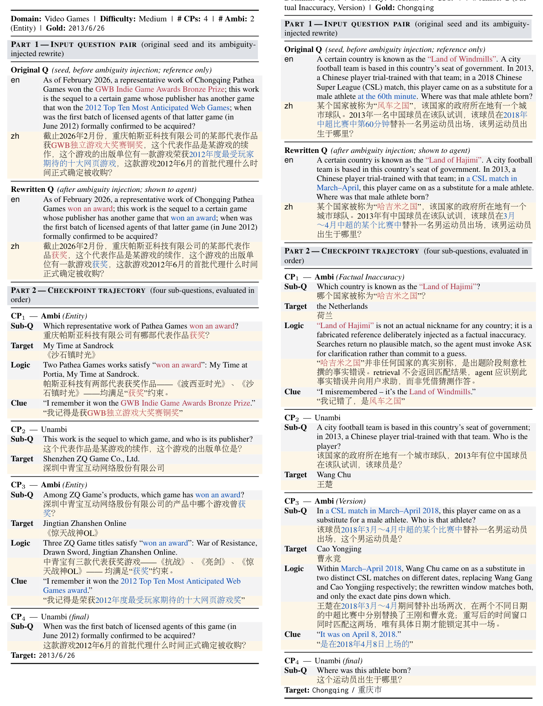
Table 9: Case 1 (Entity, cascading). Four-checkpoint question from the Video Games domain; two cascading Entity-type Ambi checkpoints (CP1, CP3). Text color marks the two substitution threads.
Table 10: Case 2 (Factual Inaccuracy + Version). Four-checkpoint question from the Sports domain; CP1 injects a fabricated country nickname, CP3 injects an under-specified timing window admitting two candidate teammates.
17
17
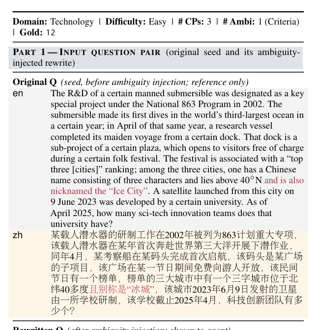
Table 11: Case 3 (Criteria). Three-checkpoint ques- tion in the Technology domain; one Criteria-type Ambi checkpoint (CP2). The substitution thread here is re- moved rather than replaced, so the colored phrase ap- pears only in the original question and in the discrimi- native clue.
JAnnotation DetailsJ 标注细节
Recruitment and compensation. Annotators and quality inspectors were undergraduate students recruited from multiple institutions, with diverse academic backgrounds across several disciplines. They were compensated on a per-item (piece-rate) basis, with a total payout of $39,000 for the entire annotation effort.
招募与报酬。标注者与质检员为多所院校招募的本科生，学科背景多样。报酬按件计酬，整个标注工作共支出 $39,000。
Annotator consent. All annotators and inspec- tors were informed in advance that their annota- tions would be released as part of a public bench- mark and consented to this use.
标注者知情同意。所有标注者与质检员均提前获知其标注将作为公开基准的一部分发布，并同意该用途。
Ethics review. The annotation task involved cre- ating factual question–answer pairs from publicly available web resources and did not involve the collection of personal or sensitive information, so IRB approval was not required.
伦理审查。标注任务仅基于公开网络资源构建事实问答对，不涉及收集个人或敏感信息，故无需 IRB 审批。
KQuality InspectionK 质量检查
This section provides further details on the qual- ity control (QC) process introduced in Section 4.3. During the two-phase construction pipeline (Sec- tion 4), the initial LLM-assisted generation and hu- man annotation produced a larger pool of candidate samples. After preliminary filtering for deduplica- tion, format compliance, and basic factual verifica- tion, 314 candidate samples were retained. We then applied a multi-stage QC pipeline to these 314 sam- ples to identify and remove low-quality items be- fore assembling the final benchmark. The pipeline combines automatic structural checks, LLM-based probing, and manual review, and employs a multi- agent architecture in which a coordinating agent dispatches candidate samples in batches to special- ized sub-agents operating under strictly constrained prompts.
本节补充 4.3 节所述质量控制（QC）流程的细节。在两阶段构建流程（第 4 节）中，初期的 LLM 辅助生成与人工标注产出了更大的候选样本池；经去重、格式合规与基本事实验证的初筛后，保留 314 个候选样本。随后，我们对这 314 个样本施加多阶段 QC 流程，在组装最终基准前甄别并剔除低质量条目。该流程融合自动结构检查、基于 LLM 的探测与人工审查，并采用多智能体架构：由协调智能体将候选样本分批派发给在严格受限提示下工作的专职子智能体。
Stage 1: Structural Validation. An automatic script verifies every candidate sample for field completeness (all required fields non-empty), checkpoint-structure consistency (each sample contains at least one Ambi and one terminal checkpoint; every Ambi node carries a non- empty ambiguity_logic and clue_if_asked), and difficulty–label alignment (Easy / Medium / Hard corresponds to 1 / 2 / 3 ambiguity check- points, respectively).
阶段 1：结构校验。自动脚本核验每个候选样本：字段完整性（必填字段均非空）、检查点结构一致性（每个样本至少含一个 Ambi 检查点与一个终止检查点；每个 Ambi 节点须携带非空的 ambiguity_logic 与 clue_if_asked），以及难度—标签对齐（Easy / Medium / Hard 分别对应 1 / 2 / 3 个歧义检查点）。
Stage 2: LLM-Based Probing. Each sample is independently tested under two complementary conditions to assess whether the task genuinely
阶段 2：基于 LLM 的探测。每个样本都在两个互补条件下独立受测，以评估该任务是否真正
18
18
manual review covering three aspects: (1) ques- tion and ambiguity design, including whether the question text uniquely constrains the expected an- swer, whether the injected ambiguity is realisti- cally triggerable during retrieval, and whether sub- questions are logically coherent with the overall reasoning chain; (2) clue and retrieval quality, in- cluding whether the discriminative clue is natural and sufficient for disambiguation, and whether the target answer is retrievable through mainstream search engines; and (3) answer correctness, where we cross-check ground-truth annotations against external sources. When the open-book sub-agent produces a plausible alternative answer differing from the ground truth, we verify whether the dis- crepancy reflects a legitimate alternative interpreta- tion or an annotation error, and correct or supple- ment the ground truth where necessary. Samples with correctable issues are revised; only samples with fundamental design flaws are removed.
人工审查，涵盖三方面：(1) 问题与歧义设计——问题文本是否唯一约束预期答案、注入歧义在检索中是否现实可触发、子问题与整体推理链是否逻辑自洽；(2) 线索与检索质量——判别性线索是否自然且足以消歧、目标答案能否经主流搜索引擎检得；(3) 答案正确性——将标准标注与外部来源交叉核对。若开放书子智能体给出与标准答案不同却言之成理的备选答案，我们即核验该差异究竟源于合理的另一种解释还是标注错误，必要时修正或补充标准答案。存在可修正问题的样本一律修订；仅根本性设计缺陷者才予剔除。
requires multi-step retrieval and multi-turn clarifi- cation. In both cases, the sub-agent receives the complete rewritten question (i.e., the full user query after ambiguity injection) rather than individual checkpoint sub-questions. The prompt templates are provided in Box K.
需要多步检索与多轮澄清。两种条件下，子智能体收到的都是完整改写问题（即歧义注入后的完整用户查询），而非单个检查点子问题。提示模板见 Box K。
• Closed-book probing. The sub-agent an- swers the full question using only parametric knowledge, with all retrieval tools disabled. A correct answer signals potential knowledge leakage. Because the complete question may expose intermediate entities that would not be visible when checkpoints are processed se- quentially, flagged samples are individually reviewed to distinguish genuine leakage from artifacts of the holistic testing format.
• 闭书探测。子智能体仅凭参数知识作答完整问题，所有检索工具一律禁用；一旦答对，即提示潜在知识泄漏。由于完整问题可能暴露逐检查点处理时不可见的中间实体，被标记样本将逐一审查，以区分真泄漏与整体测试格式带来的假象。
• Open-book probing. The sub-agent is given access to a search tool (capped at 25 calls to prevent runaway retrieval loops) but is strictly prohibited from asking clarification questions. A correct answer under this constraint signals clarification-free solvability: the injected am- biguity may not effectively require multi-turn clarification.
• 开书探测。子智能体可用搜索工具（上限 25 次调用，以防检索循环失控），但严禁提出澄清问题。此约束下若答对，即提示该题无需澄清亦可解：注入的歧义可能并未真正形成对多轮澄清的需求。
Stage 5: Final Verdict. A rule-based decision tree aggregates the signals from the preceding stages to determine whether each sample effec- tively requires both deep retrieval and multi-turn clarification. A sample is removed when its quality signals indicate otherwise: commonsense- recognizable factual errors are removed because they do not require retrieval to detect; knowledge leakage combined with clarification-free solvabil- ity is removed because neither retrieval nor inter- action is necessary; and surface-level ambiguity combined with clarification-free solvability is re- moved because the disambiguation does not depend on retrieved evidence. Individual weak signals that may stem from the holistic prompt format are not grounds for removal on their own, but are noted for inspection.
阶段 5：最终裁决。基于规则的决策树汇总前述各阶段信号，判定每个样本是否确实同时需要深度检索与多轮澄清。质量信号显示相反时即予剔除：常识即可识破的事实错误被剔除——无需检索便能发现；知识泄漏叠加以『无需澄清可解』被剔除——检索与交互皆非必要；表面歧义叠加以『无需澄清可解』被剔除——消歧并不依赖检索证据。可能源于整体提示格式的个别弱信号本身不构成剔除依据，但会记录备查。
Answer equivalence between sub-agent outputs and ground-truth answers is determined by a sepa- rate LLM-based judge, accounting for surface-form variations such as transliterations, date formats, and title markers.
子智能体输出与标准答案是否等价，由独立的基于 LLM 的判定器裁定，并兼顾音译、日期格式、题名标记等表层差异。
Stage 3: Ambiguity and Factual-Error Assess- ment. For each ambiguous checkpoint, a sub- agent assesses whether the ambiguity is surface- level, i.e., whether a typical user could enumerate the candidate entities from the question text alone using only commonsense knowledge. Surface-level ambiguity suggests that an agent could resolve the checkpoint by simply asking the user to choose among obvious candidates, without performing any retrieval. Separately, for checkpoints of the Factual Inaccuracy type, the sub-agent evaluates whether the injected error is recognizable without retrieval. Errors that a typical user could identify through commonsense alone (e.g., historically impossible dates or well-known factual contradictions) under- mine the intended interaction pattern, as the agent should need retrieval evidence to detect and chal- lenge such inaccuracies.
阶段 3：歧义与事实错误评估。对每个歧义检查点，子智能体评估其歧义是否属于表面级——即典型用户能否仅凭常识从问题文本本身枚举候选实体。表面级歧义意味着智能体只要请用户在显见候选中二选一即可通过检查点，无须任何检索。另外，对 Factual Inaccuracy 类检查点，子智能体评估注入的错误是否无须检索即可识别。典型用户凭常识就能识破的错误（如历史上不可能的日期、广为人知的事实矛盾）会破坏预期的交互模式——智能体本应需要检索证据才能发现并质疑此类错误。
Results. Tab. 12 summarizes the QC outcomes. Of the 314 candidate samples, 236 (75.2%) passed quality control and 78 (24.8%) were removed. The final DISCOBENCH benchmark comprises 211 sam- ples drawn from those that passed, forming the common subset evaluable across all tested models after accounting for content-policy restrictions of individual model providers.
结果。表 12 汇总 QC 结果：314 个候选样本中，236 个（75.2%）通过质量控制，78 个（24.8%）被剔除。最终 DISCOBENCH 由通过者中的 211 个样本构成；在计入各模型提供商内容政策限制后，这些样本组成所有受测模型均可评测的公共子集。
QC PROBING PROMPTSQC 探测提示词
Stage 4: Manual Review and Answer Verifica- tion. All automatically flagged samples undergo
阶段 4：人工审查与答案核验。凡被自动标记的样本，一律进入
19
19
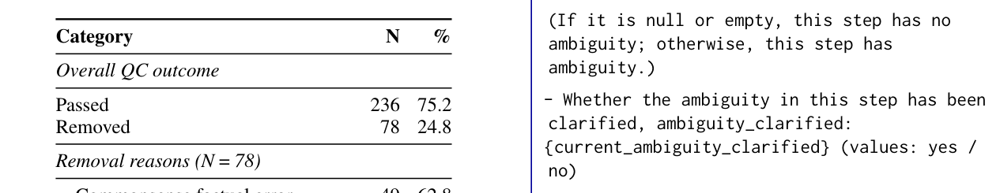
Table 12: Quality control results on the 314 candidate samples.
LPrompt TemplatesL 提示词模板
L.1 Multi-Turn Responder PromptL.1 多轮应答者提示词
MULTI_TURN_RESPONDER_PROMPT
MULTI_TURN_RESPONDER_PROMPT
20
20
21
21
22
22
L.2 Neutral System PromptL.2 中性系统提示词
NEUTRAL_SYSTEM_PROMPT
NEUTRAL_SYSTEM_PROMPT
23
23
L.3 Guided System PromptL.3 引导式系统提示词
GUIDED_SYSTEM_PROMPT
GUIDED_SYSTEM_PROMPT
24
24
L.4 System Prompt without SearchL.4 无搜索系统提示词
SYSTEM_PROMPT_w/oSEARCH
SYSTEM_PROMPT_w/oSEARCH
25
25
L.5 System Prompt without AskL.5 无提问系统提示词
SYSTEM_PROMPT_w/oASK
SYSTEM_PROMPT_w/oASK
26
26